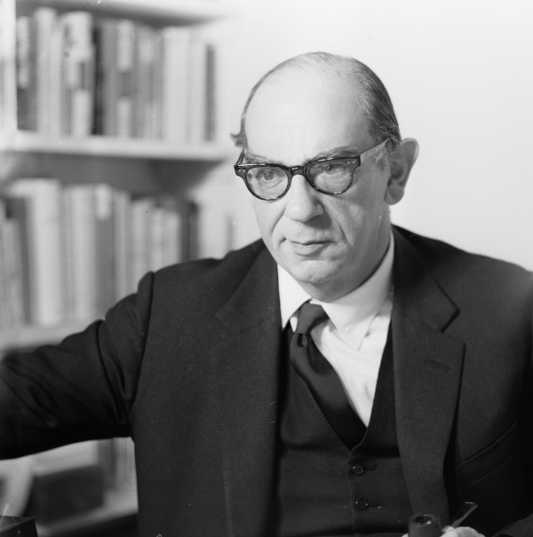

Isaiah Berlin, 18 July 1968
Photo by Helen Muspratt, Ramsey and Muspratt
© The Trustees of the Isaiah Berlin Literary Trust
Isaiah Berlin
Isaiah Berlin (1909–97) was a naturalised British philosopher, historian of ideas, political theorist, educator, public intellectual and moralist, and essayist. He was renowned for his conversational brilliance, his defence of liberalism and pluralism, his opposition to political extremism and intellectual fanaticism, and his accessible, coruscating writings on people and ideas. His essay Two Concepts of Liberty (1958) contributed to a revival of interest in political theory in the English-speaking world, and remains one of the most influential and widely discussed texts in that field: admirers and critics agree that Berlin’s distinction between positive and negative liberty remains, for better or worse, a basic starting point for discussions of the meaning and value of political freedom. Later in his life, the greater availability of his numerous essays began to provoke increasing interest in his work, particularly in the idea of value pluralism; that Berlin’s articulation of value pluralism contains many ambiguities and even obscurities has only encouraged further work on this rich and important topic by other philosophers.
- 1. Life
- 2. Philosophy of Knowledge and the Humanities
- 3. The History of Ideas
- 4. Ethical Thought and Value Pluralism
- 5. Political Thought
- 6. Conclusion
- Bibliography
- Academic Tools
- Other Internet Resources
- Related Entries
1. Life
Isaiah Berlin was born in 1909 in Riga (then capital of the Govenorate of Livonia in the Russian Empire, now capital of Latvia), the only surviving child (after a stillborn daughter) of Mendel Berlin, a prosperous Russian Jewish timber merchant, and his wife Marie, née Volshonok. In 1915 the family moved to the forestry town of Andreapol (then in Russia’s Pskov Govenorate), and in 1916 to Petrograd (now St Petersburg), where they remained through both Russian Revolutions of 1917, which Isaiah would remember witnessing. Despite early harassment by the Bolsheviks, the family was permitted to return to Riga with Latvian citizenship in 1920; from there they emigrated, in 1921, to Britain. They lived first in suburban and then in central London; Isaiah attended St Paul’s School and Corpus Christi College, Oxford, where he studied Greats (classical languages, ancient history, and philosophy) and PPE (philosophy, politics and economics), taking Firsts in both. In 1932 he was appointed to a lectureship at New College, and shortly afterwards became the first Jew to be elected to a Prize Fellowship at All Souls, considered one of the highest accolades in British academic life.
Throughout the 1930s Berlin was deeply involved in the development of what became known as Oxford philosophy, or ordinary language philosophy; his friends and colleagues included J. L. Austin, A. J. Ayer and Stuart Hampshire, all of whom met regularly (with others) in Berlin’s rooms to discuss philosophy. However, he also evinced an early interest in a more historical approach to philosophy, and in social and political theory, reflected in his lectures and reviews of the 1930s, as well as in his intellectual biography of Karl Marx (1939), still in print, in its fifth edition (2013), over eighty years later.
During the Second World War Berlin served in British Information Services in New York City (1940–2) and at the British Embassy in Washington, DC (1942–6), where he was responsible for drafting weekly reports on the American political scene. For four months in 1945–6 he visited the Soviet Union: his meetings there with surviving but persecuted members of the Russian intelligentsia, particularly the poets Anna Akhmatova and Boris Pasternak, reinforced his staunch opposition to Communism, and had a formative influence on his future intellectual agenda. After the war he returned to Oxford. Although he continued to teach and write on philosophy throughout the later 1940s and into the early 1950s, his interests had shifted to the history of ideas, particularly Russian ideas, Marxist and other socialist theories, and the Enlightenment and its critics. He also began to publish widely-read articles on contemporary political and cultural trends, political ideology, and the internal workings of the Soviet Union. In 1950, election to a research fellowship at All Souls allowed him to devote himself more fully to his historical, political and literary interests, which lay well outside the mainstream of philosophy as it was then practised and taught at Oxford. He was, however, one of the first of the founding generation of Oxford philosophers to make regular visits to American universities, and played an important part in spreading ‘Oxford philosophy’ to the USA.
In 1957, a year after he had married Aline Halban (née de Gunzbourg), Berlin was elected Chichele Professor of Social and Political Theory at Oxford (his inaugural lecture, delivered in 1958, was Two Concepts of Liberty). Later in 1957 he was knighted. He resigned his chair in 1967, the year after becoming founding President of Wolfson College, Oxford (which he essentially created), a post from which he retired in 1975. In his later years he hoped to write a major work on the history of European Romanticism, but this hope was unfulfilled. From 1966 to 1971 he was also a visiting Professor of Humanities at the City University of New York, and he served as President of the British Academy from 1974 to 1978. Collections of his writings, edited by Henry Hardy (sometimes with a co-editor), began appearing in 1978: there are, to date, fourteen such volumes (plus new editions of four works published previously by Berlin), as well as an anthology, The Proper Study of Mankind, and a four-volume edition of his letters. Berlin received the Agnelli, Erasmus and Lippincott Prizes for his work on the history of ideas, and the Jerusalem Prize for his lifelong defence of civil liberties, as well as numerous honorary degrees. He died in 1997.
1.1 Intellectual Development
An early influence on Berlin was a waning British Idealism, as expounded by T. H. Green, Bernard Bosanquet and F. H. Bradley. While an undergraduate, Berlin was converted to the Realism of G. E. Moore and John Cook Wilson. By the time he began teaching philosophy he had joined a new generation of rebellious empiricists, some of whom (most notably A. J. Ayer) embraced the logical positivist doctrines of the Vienna Circle and Wittgenstein’s earlier writings. Although Berlin was always sceptical towards logical positivism, its suspicion of metaphysical claims and its preoccupation with the nature and authority of knowledge strongly influenced his early philosophical enquiries. These, combined with his historical bent, led him back to the study of earlier British empiricists, particularly Berkeley and Hume, on whom he lectured in the 1930s and late 1940s, and about whom he contemplated writing books (which never materialised).
Berlin was also influenced by Kant and his successors. His first philosophical mentor was an obscure Russian Jewish Menshevik émigré named Solomon Rachmilevich, who had studied philosophy at several German universities, and who introduced Berlin to the great ideological quarrels of Russian history, as well as to the history of German philosophy since Kant. Later, at Oxford, R. G. Collingwood fostered Berlin’s interest in the history of ideas, introducing him in particular to such founders of historicism as Giambattista Vico and J. G. Herder. Collingwood also reinforced Berlin’s belief – heavily influenced by Kant – in the importance to human life of the basic concepts and categories in terms of which human beings organise and analyse their experience (see further 2.1 and note 2).
While working on his biography of Marx in the mid 1930s, Berlin came across the works of two Russian thinkers who would be important influences on his political and historical outlook. One of these was Alexander Herzen, who became a hero, and to whom Berlin would sometimes attribute many of his own beliefs about history, politics and ethics. The other was the Russian Marxist publicist and historian of philosophy G. V. Plekhanov. Despite his opposition to Marxism, Berlin admired and praised Plekhanov both as a man and as a historian of ideas. It was initially by reading Plekhanov’s writings that Berlin became interested in the naturalistic, empiricist and materialist thinkers of the Enlightenment, as well as their Idealist and historicist critics. Both Herzen and Plekhanov fuelled Berlin’s absorption in the political debates of nineteenth- and early twentieth-century Russian liberals and radicals of various stripes, which in turn informed his concern with both the philosophy of history and the ethics of political action.
During the Second World War, separated from his Oxford philosophical brethren, and exposed to political action, Berlin began to drift away from his early philosophical concerns. His doubts were encouraged by a meeting with the Harvard logician H. M. Sheffer, who asserted that genuine increase in knowledge was possible only in such hybrid subfields of philosophy as logic and psychology. His meeting with Sheffer led Berlin to realise that he lacked the passion and the belief in his own ability to continue pursuing pure philosophy. He concluded that as a professional philosopher (as he then understood that role) he would make no original contributions, and would end his life knowing no more than he did when he began. He therefore determined to switch to the history of ideas, in which (he believed) originality was less essential, and which would allow him to learn more than he already knew. Berlin’s approach to the history of ideas would, however, remain deeply informed by his philosophical persona, as well as by his political beliefs. His historical work was, in effect, the practice of philosophy in a historical key.
By the early 1950s Berlin’s central beliefs had crystallised from the confluence of his philosophical preoccupations, historical studies, and political and moral commitments and anxieties; and his major ideas were either already fully formed, or developing. Such essays of the late 1950s as Two Concepts of Liberty served as the occasion for a synthesis and solidification of his thoughts. Berlin had always been a liberal; but from the early 1950s the defence of liberalism became central to his intellectual concerns. This defence was, characteristically, closely related to his moral beliefs and to his preoccupation with the nature and role of values in human life. In the early 1960s Berlin’s focus moved from the more political concerns that occupied him in the 1950s to an examination of the nature of the humanities. Throughout the 1950s and 1960s he was working on the history of ideas, and from the mid 1960s nearly all of his writings took the form of essays in this field, particularly on the Romantic and reactionary critics of the Enlightenment. In the final decades of his life Berlin continued to refine and re-articulate his ideas, and particularly his formulation of pluralism; but his course was set, and he appears to have been little affected by later intellectual developments.
2. Philosophy of Knowledge and the Humanities
2.1 Conception of Philosophy
Berlin’s conception of philosophy was shaped by his early exposure to, and rejection of, both Idealism and logical positivism.[1] With the former he associated an excessively exalted view of philosophy as the ‘queen of the sciences’, capable of establishing fundamental, necessary, absolute, universal truths. With the latter he associated the reductionist and deflationary view of philosophy as, at best, a handmaiden to the sciences, and at worst a sign of intellectual immaturity bred of scientistic confusion and credulity.
Berlin’s approach combined a sceptical empiricism with neo-Kantianism to offer a defence of philosophy. Like Vico and Wilhelm Dilthey, as well as neo-Kantians such as Heinrich Rickert and Wilhelm Windelband, Berlin insisted on the fundamental difference between the sciences and the humanities. He classed philosophy among the humanities, but even there its status was unique. Those working in other fields aimed to discover authoritative methods for acquiring knowledge of the subjects to which they were devoted. Philosophy, however, was for Berlin concerned with questions which not only could not at present be answered, but for which no clearly proper method of discovering an answer was known (see e.g. ‘The Purpose of Philosophy’ in 1978b and 2000a).
In the case of non-philosophical questions, even if the answer is unknown, the means for discovering the answer is known, or accepted, by most people. Thus questions of empirical fact can be answered by observation. Other questions can be answered deductively, by referring to established rules: this is the case, for example, with mathematics, grammar and formal logic. For example, even if we do not know the solution to a difficult mathematical problem, we do know the rules and techniques that should lead us to the answer.
According to Berlin, philosophy concerns itself with questions of a special, distinctive character. To such questions not only are the answers not known, but neither are the means for arriving at answers, or the standards of judgement by which to evaluate a suggested answer. Thus the questions ‘How long does it take to drive from x to y?’ or ‘What is the cube root of 729?’ are not philosophical; while ‘What is time?’ or ‘What is a number?’ are. ‘What is the purpose of human life?’ or ‘Are all men brothers?’ are philosophical questions, while ‘Do most of such-and-such a group of men think of one another as brothers?’ or ‘What did Luther believe was the purpose of life?’ are not.
Berlin related this view to Kant’s distinction between matters of fact and those conceptual structures and categories that we use to make sense of facts. Philosophy, being concerned with questions that arise from our attempts to make sense of our experiences, involves consideration of the concepts and categories through which experience is perceived, organised and explained.
While Kant saw these organising categories as fixed and universal, Berlin believed that they are, to different degrees, varying, transient or malleable. ‘All our categories are, in theory, subject to change’ (2002b, 144, note 1). No categories are wholly prior to, or independent of, experience, even though in practice some of them are pragmatically fixed, whether by the world or by our minds or both. Rather, the ideas in terms of which we make sense of the world are closely tied up with our experiences: they shape those experiences, and are shaped by them, and as experience varies from one time and place to another, so do basic concepts.[2] Recognition of the basic concepts and categories of human experience differs both from the acquisition of empirical information and from deductive reasoning, for the categories are logically prior to, presupposed by, both.
Philosophy, then, is the study of the ‘thought-spectacles’ through which we view the world; and since at least some of these change over time, at least some philosophy is necessarily historical. Because these categories are so important to every aspect of our experience, philosophy – even if it is always tentative and often seems abstract and esoteric – is a crucially important activity, which responds to the vital, ineradicable human need to describe and explain the world of experience.
Berlin insisted on philosophy’s social usefulness, however indirect and unobtrusive.[3] By bringing to light often subconscious presuppositions and models, and scrutinising their validity, philosophy identifies errors and confusions that lead to misunderstanding, distort experience, and thus do real harm. Because philosophy calls commonly accepted assumptions into question, it is inherently subversive, opposed to all orthodoxy, and often troubling; but this is inseparable from what makes philosophy valuable, and indeed indispensable, as well as liberating. Philosophy’s goal, Berlin concluded, was ‘to assist men to understand themselves and thus operate in the open, and not wildly, in the dark’ (1978b, 14).
2.2 Basic Propositions: Epistemology, Metaphysics, Logic
Perhaps the most important work Berlin did in ‘pure’ philosophy, in the light of his later ideas, concerned ‘logical translation.’[4] In his essay of that title (reprinted in 1978b), Berlin criticised the assumption that all statements, to be genuine and meaningful, or to claim correctness, must be capable of being translated into a single, ‘good’ type of proposition, and asserted that the ideal of a single proper type of proposition was illusory and misleading. He identified two different, opposed approaches based on this erroneous assumption. One was the ‘deflationary’ approach, which sought to assimilate all propositions to one true type. Thus, phenomenalism sought to translate all statements into assertions about immediately perceived sense data. The other was the ‘inflationary’ approach, which posited entities corresponding to all statements, thus ‘creating’ or asserting the existence of things that didn’t exist at all. Both of these errors stemmed from a demand for a ‘forcible assimilation’ of all propositions to a single type. Berlin suggested that such a demand was based, not on a true perception of reality, but rather on a psychological need for certainty, uniformity and simplicity, as well as what he termed the ‘Ionian Fallacy’, the assumption that everything is made out of, or can be reduced to or understood in terms of, one and the same substance or type.[5]
Berlin insisted that there is no single criterion of meaningfulness, no absolutely incorrigible type of knowledge. The quest for certainty was self-defeating: to restrict oneself to saying only that which could be said without any doubt or fear of being mistaken was to sentence oneself to silence. To say anything about the world requires bringing in something other than immediate experience:
The vast majority of the types of reasoning on which our beliefs rest, or by which we should seek to justify them […], are not reducible to formal deductive or inductive schemata, or combinations of them. […] The web is too complex, the elements too many and not, to say the least, easily isolated and tested one by one; […] we accept the total texture, compounded as it is out of literally countless strands – […] without the possibility, even in principle, of any test for it in its totality. For the total texture is what we begin and end with. There is no Archimedean point outside it whence we can survey the whole and pronounce upon it. […] It is the sense of the general texture of experience […] that constitutes the foundation of knowledge, that is itself not open to inductive or deductive reasoning: for both these methods rest upon it. (1978b, 149–50)
At the heart of Berlin’s philosophy was an awareness of the enormous variety and complexity of reality, which we can only begin to comprehend: the many strands that make up human experience are ‘too many, too minute, too fleeting, too blurred at the edges [to be integrated into a total picture of experience]. They criss-cross and penetrate each other at many levels simultaneously, and the attempt to prise them apart […] and pin them down, and classify them, and fit them into their specific compartments, turns out to be impracticable’ (1978b, 156).
These two closely related propositions – that absolute certainty is an impossible ideal (Berlin once wrote that, if his work displayed any ‘single tendency’, it was a ‘distrust of all claims to the possession of incorrigible knowledge about issues of fact or principle in any sphere of human behaviour’: 1978a, x), and that not everything can or should be reduced or related to a single ideal, model, theory or standard – might be considered the centrepieces of Berlin’s philosophy. They are central to his view of language and knowledge; they are equally important to his ethics and his philosophy of the humanities. Also central to these different facets of his thought was Berlin’s emphasis on the importance, and indeed priority, of particular things as objects of knowledge and of individual people as moral subjects.
2.3 The Distinction between the Sciences and the Humanities
Berlin’s individualism, the influence on him of neo-Kantianism, and what one scholar (Allen 1998) has called his anti-Procrusteanism – his opposition to attempts dogmatically and inappropriately to impose standards or models on aspects of human experience which they don’t fit – shaped his view of what he usually referred to as the ‘humanities’ (sometimes as ‘humane studies’) and their relationship to the (natural) sciences. By ‘humanities’ he meant all disciplines concerned with the study of human conduct and experience – thus encompassing many so-called ‘social sciences’ as well as the fields of study traditionally classed as ‘humanities’ (see note 1).
Berlin criticised the positivist view of the sciences as the paradigmatic form of knowledge, which the humanities should measure themselves by and seek to emulate. He argued that the humanities differed fundamentally from the sciences both in the nature of their subject matter (as Vico and Dilthey had maintained), and in the sort of knowledge that they sought (as Rickert insisted). As a result, different methods, standards and goals were appropriate to each.
Most obviously, the humanities study the world that human beings create for themselves and inhabit, while the sciences study the physical world of nature. Why should this make a difference to the way they are studied? One answer is that the two worlds are fundamentally different in themselves. But Berlin preferred the argument that the human and natural worlds must be studied differently because of the differing relationship between the observer or thinker and the object of study. We study nature from without, culture from within. In the humanities the scholar’s own ways of thinking, the fabric of his or her life, every facet of his or her experience is part of the object of study. The sciences, on the other hand, aim to understand nature objectively and dispassionately. The scientist must take as little for granted as possible, preferring hard evidence to ‘common sense’ when they diverge. But in the humanities one cannot act in this manner: to study human life, it is necessary to begin from our understanding of other human beings, of what it is to have motives and feelings. Such understanding is based on our own experience, which in turn necessarily involves certain ‘common-sense’ assumptions, which we use to fit our experience into patterns that make it explicable and comprehensible. These patterns may be more or less accurate; and we can judge their accuracy by seeing how well they fit experience as we know it. But we cannot divest ourselves entirely of the assumptions that underlie them. (The human world can also itself be a legitimate subject of scientific study, of course, but only incompletely, by bracketing off what makes it distinctive. Cf. note 7.)
Berlin asserted that the humanities also differed from the sciences in that the former were concerned with understanding the particulars of human life in and of themselves, while the sciences sought to establish general laws which could explain whole classes of phenomena. The sciences are concerned with types, the humanities with individuals. Scientists concentrate on similarities and look for regularities; at least some practitioners of the humanities – historians, in particular – are interested in differences. To be a good historian requires a ‘concentrated interest in particular events or persons or situations as such, and not as instances of a generalisation’ (1978b, 180). The humanities should not aim to emulate the sciences by seeking laws to explain or predict human actions, but should concern themselves with understanding every particular human phenomenon in its uniqueness. In the case of a science we think it more rational to put our trust in general laws than in specific phenomena; in the case of the humanities, the opposite is true. If someone claims to have witnessed a phenomenon that contradicts well-established laws of science, we seek an explanation that will reconcile that perception with science; if none is possible, we may conclude that the witness is deceived. In the case of history we do not usually do this: we look at particular phenomena and seek to explain them in themselves.[6] There are, Berlin claimed, ‘more ways than one to defy reality’. It is unscientific to ‘defy, for no good logical or empirical reason, established hypotheses and laws’. But it is unhistorical, on the other hand, to ‘ignore or twist one’s view of particular events, persons, predicaments in the name of laws, theories, principles derived from other fields, logical, ethical, metaphysical, scientific, which the nature of the medium renders inapplicable’ (1978b, 185).
Berlin emphasised the importance to a sense of history of the idea of its ‘one-directional’ flow (ibid., 144). This sense of historical reality makes it seem not merely inaccurate, but implausible, and indeed ridiculous, to suggest, for example, that Hamlet was written in the court of Genghis Khan (ibid., 142, 175). The historical sense involves, not knowledge of what happened – this is acquired by empirical means – but a sense of what is plausible and implausible, coherent and incoherent, in accounting for human action (1978b, 183). There is no a priori shortcut to such knowledge. Historical thinking is much more like the operation of common sense, involving the weaving together of various logically independent concepts and propositions, and bringing them to bear on a particular situation as best we can, than like the application of laws or formulae. The ability to do this is a knack – judgement, or a sense of reality (1978b, 152).
Understanding of history is based on knowledge of humanity, which is derived from direct experience, consisting not merely of introspection, but of interaction with others. This is the basis for Verstehen, or imaginative understanding: the ‘recognition of a given piece of behaviour as being part and parcel of a pattern of activity which we can follow, […] and which we describe in terms of the general laws which cannot possibly all be rendered explicit (still less organised into a system), but without which the texture of normal human life – social or personal – is not conceivable’ (1978b, 168). The challenge of history is the need for the individual to go beyond his or her own experience, which is the basis of his or her ability to conceive of human behaviour. We must reconstruct the past not only in terms of our own concepts and categories, but in terms of how past events must have looked to those who participated in them. The practice of history thus requires gaining knowledge of what consciousness was like for other persons, in situations other than our own, through an ‘imaginative projection of ourselves into the past’ in order to ‘capture concepts and categories that differ from those of the investigator by means of concepts and categories that cannot but be his own. […] Without a capacity for empathy and imagination beyond any required by a physicist, there is no vision of either past or present, neither of others nor of ourselves’ (1978b, 177–8). Historical reconstruction and explanation involves ‘entering into’ the motives, principles, thoughts and feelings of others; it is based on a capacity for knowing like that of knowing someone’s character or face (1978b, 173–5).
2.4 Free Will and Determinism
The sort of historical understanding that Berlin sought to depict was ‘related to moral and aesthetic analysis’. It conceives of human beings not merely as organisms in space, but as ‘active beings, pursuing ends, shaping their own and others’ lives, feeling, reflecting, imagining, creating, in constant interaction and intercommunication with other human beings; in short, engaged in all the forms of experience that we understand because we share in them, and do not view them purely as external observers’ (1978b, 173–4). For Berlin, the philosophy of history was tied not only to epistemology, but to ethics. The best-known and most controversial facet of his writings on the relationship of history to the sciences was his discussion of the problem of free will and determinism, which in his hands took on a distinctly moral cast.[7] In Historical Inevitability Berlin radically questioned determinism (the view that human beings do not possess free will, that their actions and indeed thoughts are predetermined by impersonal forces beyond their control) and historical inevitability (the view that all that occurs in the course of history does so because it must, that history pursues a particular course which cannot be altered, and which can be discovered, understood and described through laws of historical development).
Berlin did not assert that determinism was untrue, but rather that to accept it required a radical transformation of the language and concepts we use to think about human life – especially a rejection of the idea of individual moral responsibility. To praise or blame individuals, to hold them responsible, is to assume that they have some control over their actions, and could have chosen differently. If individuals are wholly determined by unalterable forces, it makes no more sense to praise or blame them for their actions than it would to blame someone for being ill, or praise someone for obeying the laws of gravity. Indeed, Berlin further suggested that acceptance of determinism – that is, the complete abandonment of the concept of human free will – would lead to the collapse of all meaningful rational activity as we know it.
This is an extension into the realm of the understanding of human beings of Kant’s ‘Copernican’ revolution (to use Kant’s own epithet). Kant gave full recognition, for the first time, to the inescapable contribution made by our minds to grasping the non-human world; Berlin mirrors this move with a scarcely less fundamental claim of his own, that there are equally inescapable ways in which, at any given time or at all times known to us, we cannot but think of and understand the behaviour and experience of our own kind.
The basic categories (with their corresponding concepts) in terms of which we define men – such notions as society, freedom, sense of time and change, suffering, happiness, productivity, good and bad, right and wrong, choice, effort, truth, illusion (to take them wholly at random) – are not matters of induction and hypothesis. To think of someone as a human being is ipso facto to bring all these notions into play; so that to say of someone that he is a man, but that choice, or the notion of truth, mean nothing to him, would be eccentric: it would clash with what we mean by ‘man’ not as a matter of verbal definition (which is alterable at will), but as intrinsic to the way in which we think, and (as a matter of ‘brute’ fact) evidently cannot but think. (CC2 217)
Here ‘freedom’ means the centrally important concept of free will. We cannot help experiencing human behaviour as causally undetermined and freely chosen. That we have free will is not a scientific hypothesis, but a precondition of our experience of humanity, to abandon which would leave our world-view in ruins. (Whether this entails that determinism is false is a further question, which Berlin does not fully confront; nor do we pursue it here.)
Berlin also insisted that belief in historical inevitability was inspired by psychological needs, and not required by known facts; and that it had dangerous moral and political consequences, justifying suffering and undermining respect for the ‘losers’ of history. A belief in historical inevitability served as an ‘alibi’ for evading responsibility and blame, and for committing enormities in the name of necessity or reason. It provided an excuse both for acting badly and for not acting at all.[8]
Berlin’s insistence on the importance of the idea of free will, and the incompatibility of consistent and thoroughgoing determinism with our basic sense of ourselves and our experience as human beings, was closely tied to his liberalism and pluralism, with their emphasis on the importance, necessity and dignity of individual choice. This insistence involved him in a number of debates with other philosophers and historians in the 1950s and early 1960s, and helped to provoke a spate of writing in the English-speaking world on the philosophy of history, which might otherwise have languished.
Also controversial was Berlin’s claim that the writing and contemplation of history necessarily involves moral evaluation. He did not, as some of his critics charged (e.g. Carr 1961), mean this as a call for moralising on the part of historians. Berlin’s argument was that, first, our normal way of regarding human beings as agents who make choices necessarily involves moral evaluation; to eliminate moral evaluation from our thinking completely would be to alter radically the way that we view the world. Nor would such an alteration truly move beyond moral evaluation; for strenuous attempts to be morally neutral are themselves motivated by a moral commitment to the ideal of impartiality. Furthermore, given the place of moral evaluation in ordinary human thought and speech, an account couched in morally neutral terms will fail accurately to reflect the experience or self-perception of the historical actors in question. This last argument was particularly important to Berlin, who believed that historical writing should reflect and convey past actors’ understanding of their situation, so as to provide explanations of why, thinking as they did, they acted as they did. He therefore insisted that the historian must attend to the moral claims and perceptions underlying historical events.
3. The History of Ideas
Berlin’s emphasis on the subversive, liberating, anti-orthodox nature of philosophy was accompanied by a particular interest in moments of radical change in the history of ideas, and in original, heterodox and often marginal thinkers, while his emphasis on the practical consequences of ideas led him to focus on those transformations and challenges which, in his view, had wrought particularly decisive changes in people’s moral and political consciousness, and in their behaviour. Finally, his concern with the conflicts of his own day led him to concentrate mainly on modern intellectual history, and to trace the emergence of certain ideas that he regarded as particularly important, for good or ill, in the contemporary world.[9]
Many of Berlin’s writings on the history of ideas were connected to his philosophical work, and to one another, in their examination of certain overarching themes. These included the relationship between the sciences and the humanities; the philosophy of history; the origins of nationalism and socialism; the revolt against what Berlin called ‘monism’ in general, and scientism in particular, in the early nineteenth century and thereafter; and the vicissitudes of ideas of liberty.
The narrative of the history of ideas that Berlin developed and refined over the course of his works began with the Enlightenment, and focused on the initial rebellion against what he regarded as that epoch’s dominant assumptions.[10]
In Berlin’s account, the thinkers of the Enlightenment believed human beings to be naturally either benevolent or malleable. This created a tension within Enlightenment thought between the view that nature dictates human ends, and the view that nature provides more or less neutral material, to be moulded rationally and benevolently (ultimately the same thing) by conscious human interventions – education, legislation, rewards and punishment, the whole apparatus of society.[11] Berlin also attributed to the Enlightenment the beliefs that all human problems, both of knowledge and ethics, can be resolved through the discovery and application of the proper method (generally reason, the conception of which was based on the methods of the sciences, particularly Newtonian physics); and that genuine human goods and interests were ultimately compatible, so that conflict, like wickedness, was the result of ignorance, misunderstanding, or deception and oppression practiced by corrupt authorities (particularly the Church).[12]
Berlin saw the school (or schools) of thought that began to emerge shortly before the French Revolution, and became ascendant during and after it, as profoundly antagonistic towards the Enlightenment. He was most interested in German Romanticism, but also looked at other members of the larger tendency he referred to as the ‘Counter-Enlightenment’.[13] Berlin’s account sometimes focused on a attack on the Enlightenment’s benevolent and optimistic liberalism by nationalists and reactionaries; sometimes on the rejection of moral and cultural universalism by champions of cultural particularism and pluralism; and sometimes on the critique of naturalism and scientism by thinkers who advocated a historicist view of society as essentially dynamic, shaped not by the laws of nature, but by the unlawlike, purposeless contingencies of history.
Berlin has been viewed both as an adherent of the Enlightenment who showed a fascination, whether eccentric or admirable, with its critics; and as a critic and even opponent of the Enlightenment, who frankly admired its enemies. There is some truth in both of these pictures, neither of which does justice to the complexity of Berlin’s views. Berlin admired many of the thinkers of the Enlightenment, and explicitly regarded himself as ‘on their side’ (Jahanbegloo 1992, 70); he believed that much of what they had accomplished had been for the good; and, as an empiricist, he recognised them as part of the same philosophical tradition to which he belonged. But he also believed that they were wrong, and sometimes dangerously so, about some of the most important questions of society, morality and politics. He regarded their psychological and historical vision as shallow, excessively uniform, and naive; and he traced to the Enlightenment a technocratic, managerial view of human beings and political problems to which he was profoundly opposed, and which, in the late 1940s and early 1950s, he regarded as one of the gravest dangers facing the world.
Berlin regarded the Enlightenment’s critics as in many ways dangerous and deluded. He attacked or dismissed their metaphysical beliefs, particularly the philosophies of history of Hegel and his successors. He was also wary of the aesthetic approach to politics that many Romantics had practised and fostered. And, while appreciative of some elements in the Romantic conception of liberty, he saw Romanticism’s influence on the development of the idea of liberty as largely perverting. But at the same time he thought the Enlightenment’s opponents had pointed to many important truths that the Enlightenment had neglected or denied, both negative (the power of unreason, and particularly the darker passions, in human affairs) and positive (the inherent value of variety and of personal virtues such as integrity and sincerity, and the centrality to human nature and dignity of the capacity for choice). Romanticism rebelled in particular against the constricting order imposed by reason, and championed the human will. Berlin was sympathetic to this stance, but also believed that the Romantics had gone too far both in their protests and in their celebrations. He remained committed to the goal of understanding the world so as to be able to ‘act rationally in it and on it’ (1990, 2). His interest in critics of the Enlightenment reflected both curiosity about the views of those with whom he often disagreed, and a desire to learn from the most acute challenges to a progressive, ‘liberal rationalist’[14] (Jahanbegloo 1992, 70) or ‘rational-liberal’ (Berlin 2006a, 104) position, so as to appreciate, and repair, its shortcomings and vulnerabilities. Berlin’s own articulation of liberalism and pluralism attempted to integrate a defence of the Enlightenment’s legacy with the insights of its critics.
4. Ethical Thought and Value Pluralism
The republication of Berlin’s numerous essays in thematic collections, beginning with Four Essays on Liberty (1969) and Vico and Herder (1976), and continuing at an increased pace from 1978 under the general (and mostly specific) editorship of Henry Hardy, served to highlight as a central dimension of Berlin’s thought his advocacy of the doctrine of value pluralism (which he himself called ‘pluralism’). Increasingly from the early 1990s value pluralism has come to be seen by many as Berlin’s ‘master idea’, and has become the most discussed, most admired and most controversial of his ideas.
Value pluralism was indeed at the centre of Berlin’s ethical thought; but there is more to that thought than value pluralism alone. Berlin defined ethical thought as ‘the systematic examination of the relations of human beings to one another, the conceptions, interests and ideals from which human ways of treating one another spring, and the systems of value on which such ends of life are based’. These systems of value are ‘beliefs about how life should be lived, what men and women should be and do’ (1990, 1–2). Just as Berlin’s conception of philosophy was based on a belief about the important role of concepts and categories in people’s lives, his conception of ethics was founded on his belief in the importance of normative or ethical concepts and categories – especially values.[15]
Berlin did not set out a systematic theory about the nature of values, and so his view must be gleaned from his writings on the history of ideas. His remarks on the status and origins of values are ambiguous, though not necessarily irreconcilable with one another. He seems, first, to endorse the Romantic view – which he traces to Kant (although he also sometimes attributes it to Hume) – that values are not discovered ‘out there’, as ‘ingredients’ in the universe, not deduced or derived from nature. Rather, they are human creations, and derive their authority from this fact. From this followed a theory of ethics according to which individual human beings are the most morally valuable things, so that the worth of ideals and actions should be judged in relation to the meanings and impact they have for and on such individuals. This view underlay Berlin’s passionate conviction of the error of looking to theories rather than human realities, of the evil of sacrificing living human beings to abstractions (which he found emphasised in Herzen); it also related to Berlin’s theory of liberty, and his belief in liberty’s special importance.
At other times Berlin seems to advance what amounts almost to a theory of natural law, albeit in minimalist, empirical dress. In such cases he suggests that there are certain unvarying features of human beings, as they have been constituted throughout recorded history, that make certain values important, or even necessary, to them. Values, then, would be beliefs about what it is good to be and do – about what sort of life, what sort of character, what sort of actions, what state of being it is desirable, given human nature, for us to aspire to. This view of the origin of values also comes into play in Berlin’s defence of the value of liberty, when he suggests that the freedom to think, to enquire, to imagine, and above all to choose, without constraint or fear, is valuable because human beings need such mental freedom; to deny it to them is a denial of their nature, imposes an intolerable burden, and at the extreme entirely dehumanises them.
In an attempt to reconcile these two strands, one might say that, for Berlin, the values that humans create are rooted in the nature of the beings who pursue them. But this is simply to move the question back a step, for the question then immediately arises: Is this human nature natural and fixed, or created and altered over time through conscious or unconscious human action? Berlin’s answer (see e.g. 1990, 319–23) comes in two parts. He rejects the idea of a fixed, fully specified human nature, regarding natural essences with suspicion. Yet he does believe (however under-theorised, unsystematic and undogmatic this belief may be) in boundaries to, and requirements made by, human nature as we know it. This common human nature may not be fully specifiable in terms of a list of unvarying characteristics; but, while many characteristics may vary from individual to individual or culture to culture, there is a limit on the variation – just as the human face may vary greatly from person to person in many of its properties, while remaining recognisably human, but at the same time it is possible to distinguish between a human and a non-human face, even if the difference between them cannot be reduced to a formula. Indeed, at the core of Berlin’s thought was his insistence on the importance of humanity, or the distinctively human, both as a quasi-Kantian category and as a moral reality, which does not need to be reduced to an unvarying essence in order to have descriptive and normative force.
There is a related ambiguity about whether values are objective or subjective. One might conclude from Berlin’s view of values as human inventions that he would regard them as subjective. Yet he insisted, on the contrary, that values are objective, even going so far as to label his position ‘objective pluralism’ (2015, 210; 2000b, 245, note 1). Yet it is unclear what exactly he meant by this, or how this belief relates to his view of values as human creations. There are at least two accounts of the objectivity of values that can be plausibly attributed to Berlin. The first is that values are ‘objective’ in that they are simply facts about the people who hold them – so that, for instance, liberty is an ‘objective’ value because I value it, and would feel frustrated and miserable without at any rate a minimal amount of it. The second is that the belief in or pursuit of certain values is the result of objective realities of human nature – so that, for instance, liberty is an ‘objective’ value because certain facts about human nature make liberty good and desirable for human beings. These views are not incompatible with one another, but they are distinct; and the latter provides a firmer basis for the minimal moral universalism that Berlin espoused.
Finally, Berlin insisted that each value is binding on human beings by virtue of its own claims, in its own terms, and not in terms of some other value or goal, let alone the same value in all cases. This view was one of the central tenets of Berlin’s pluralism.
4.1 Berlin’s Definition of Value Pluralism
Berlin’s development and definition of pluralism both began negatively, with the identification of the opposing position, which he usually referred to as ‘monism’, and sometimes as ‘the Ionian fallacy’ or ‘the Platonic ideal’. His definition of monism may be summarised as follows:
- All genuine questions must have one true answer, and one only; all other responses are errors.
- There must be a dependable path to discovering the true answer to a question, which is in principle knowable, even if currently unknown.
- The true answers, when found, will be compatible with one another, forming a single whole; for one truth cannot be incompatible with another. (This, in turn, is based on the assumption that the universe is harmonious and coherent.)
We have seen that Berlin denied that the first two of these assumptions are true. In his ethical pluralism he pushed these denials further, and added a forceful denial of the third assumption. According to Berlin’s pluralism, genuine values are many. They may – and often do – come into conflict with one another. When two or more values clash, it is not because one or another has been misunderstood; nor can it be said, a priori, that any one value is always more important than another. Liberty can conflict with equality or with public order; mercy with justice; love with impartiality and fairness; social and moral commitment with the disinterested pursuit of truth or beauty (the latter two values, contra Keats, may themselves be incompatible); knowledge with happiness; spontaneity and free-spiritedness with dependability and responsibility. Conflicts of values are ‘an intrinsic, irremovable element in human life’; ‘the notion of total human fulfilment is a […] chimera’. ‘These collisions of values are of the essence of what they are and what we are’; a world in which such conflicts are resolved is not the world we know or understand (2002b, 213; 1990, 13).
Berlin further asserted that values may be not only incompatible, but incommensurable. There has been considerable controversy over what he meant by this, and whether his understanding of incommensurability was either correct or coherent. In speaking of the incommensurability of values, Berlin seems to have meant that there is no common measure, no ‘common currency’ in terms of which the relative importance of any two values can be established in the abstract. Thus one basic implication of pluralism for ethics is the view that a quantitative approach to ethical questions (such as that envisaged by Utilitarianism) is impossible. In addition to denying the existence of a common currency for comparison, or a governing principle (such as the utility principle), value incommensurability holds that there is no general procedure for resolving value conflicts – there is not, for example, a lexical priority rule (that is, no value always has priority over another).
Berlin based these assertions on empirical grounds – on ‘the world that we encounter in ordinary experience’, in which ‘we are faced with choices between ends equally ultimate, and claims equally absolute,[16] the realisation of some of which must inevitably involve the sacrifice of others’ (2002b, 213–14). Yet he also held that the doctrine of pluralism reflected logically necessary rather than contingent truths about the nature of human moral life and the values that are its ingredients. The idea of a perfect whole or ultimate solution is not only unattainable in practice, but also conceptually incoherent. To avert or overcome conflicts between values once and for all would require the transformation, which amounted to the abandonment, of those values themselves. It is not clear that this logical point adds anything significant to the empirical point about human ends recorded in the last quotation, but we do not pursue this doubt here.
Berlin’s pluralism was not free-standing: it was modified and guided by other beliefs and commitments. One of these, discussed below, was liberalism. Another was humanism – the view that human beings are of primary importance, and that avoiding harm to human beings is the first moral priority (Aarsbergen-Ligtvoet 2006; Cherniss and Hardy 2018). Berlin therefore held that, in navigating between conflicting values, ‘The first public obligation is to avoid extremes of suffering.’ He insisted that moral collisions, even if unavoidable, can be softened, claims balanced, compromises reached. The goal should be the maintenance of a ‘precarious equilibrium’ that avoids, as far as possible, ‘desperate situations’ and ‘intolerable choices’. Philosophy itself cannot tell us how to do this, though it can help by bringing to light the problem of moral conflict and all of its implications, and by weeding out false solutions. But in dealing with conflicts of values, ‘The concrete situation is almost everything’ (1990, 18–19).
One of the main features of Berlin’s account of pluralism is the emphasis placed on the act of choosing between values. Pluralism holds that, in many cases, there is no single right answer. Berlin used this as an argument for the importance of liberty (see note 25) – or, perhaps more precisely, an argument against the restriction of liberty in order to impose the ‘right’ solution by force. Berlin also made a larger argument about making choices. Pluralism involves conflicts, and thus choices, not only between particular values in individual cases, but between ways of life. While Berlin seems to suggest that individuals have certain inherent traits – an individual nature, or character, which cannot be wholly altered or obscured – he also insisted that they make decisions about who they will be and what they will do. Choice is thus both an expression of an individual personality, and part of what makes that personality; it is essential to the human self.
4.2 Value Pluralism before Berlin
Berlin provided his own (inconsistent and somewhat peculiar) genealogies of pluralism. He found the first rebellion against monism either in Machiavelli (1990, 7–9) or in Vico and Herder (2000a, 8–11), who were also decisive figures in the first account. Yet he acknowledged that Machiavelli wasn’t really a pluralist, but a dualist; and other scholars have questioned his identification of Vico and Herder as pluralists, when both avowed belief in a higher, divine or mystical, unity behind variety. Other scholars have credited other figures in the history of philosophy, such as Aristotle, with pluralism (Nussbaum 1986, Evans 1996). James Fitzjames Stephen advanced something that looks very much like Berlin’s pluralism (Stephen 1873), though he allied it to a conservative critique of Mill’s liberalism.
In Germany, Dilthey came close to pluralism, and Max Weber presented a dramatic, forceful picture of the tragic conflict between incommensurable values, belief systems and ways of life (Weber 1918, esp. 117, 126, 147–8, 151–3; cf. Weber 1904, esp. 17–18).
Ethical pluralism first emerged under that name, however, in America, inspired by William James’s pluralistic view of the universe, as well as his occasional gestures towards value pluralism (James 1891). John Dewey and the British theologian Hastings Rashdall both approximated pluralism in certain writings (Dewey 1908, Rashdall 1907); but pluralism was apparently first proposed, under that name, and as a specifically ethical doctrine, in language strikingly similar to Berlin’s, by Sterling Lamprecht, a naturalist philosopher and scholar of Hobbes and Locke, in two articles (1920, 1921), as well as, somewhat later, by A. P. Brogan (1931). The dramatic similarities between not only Berlin’s and Lamprecht’s ideas, but also their language, make it difficult to believe that Lamprecht was not an influence on Berlin. However, there is no independent evidence that Berlin knew Lamprecht’s work; and Berlin’s tendency was more often to credit his own ideas to others than to claim the work of others as his own.
Versions of pluralism were also advocated by Berlin’s contemporaries Raymond Aron, Stuart Hampshire, Reinhold Niebuhr and Michael Oakeshott (although Oakeshott seems to have attributed conflicts of values to a mistakenly reflective approach to ethical issues, and suggested that they could be overcome through relying on a more habitual, less self-conscious, ethical approach: see Oakeshott 1962, 1–36).
4.3 The Emergence of Value Pluralism in Berlin’s Work
Some of the elements of value pluralism are detectable in Berlin’s early essay ‘Some Procrustations’ (1930), published while he was still an undergraduate at Oxford. This essay, drawing on Aristotle, and focusing on literary and cultural criticism rather than philosophy proper, made the case for epistemological and methodological, rather than ethical, pluralism. Berlin criticised the belief in, and search for, a single method or theory, which could serve as a master key for understanding all experience. He insisted that, on the contrary, different standards, values and methods of enquiry are appropriate for different activities, disciplines and facets of life. In this can be seen the seeds of his later work on the differences between the sciences and the humanities, of his attacks on systematic explanatory schemes, and of his value pluralism; but all these ideas had yet to be developed or applied.
Berlin was further nudged towards pluralism by discovering what he saw as a suggestion by Nicolas Malebranche that simplicity and goodness are incompatible (1680, e.g. 116–17, 128–30); this struck him at the time as an ‘odd interesting view!’, but it stuck, and he became convinced of its central and pregnant truth (2004, 72).[17] Berlin set out his basic account of what he would later label monism in his biography of Marx (1939, 37), but did not explicitly criticise it or set out a pluralistic alternative to it, although his lecture ‘Utilitarianism’ (1937b), dating from the late 1930s, does include an argument that anticipates his later claim that values are incommensurable. The basic crux of pluralism, and Berlin’s connection of it to liberalism, is apparent in rough, telegraphic form in Berlin’s notes for his lecture ‘Democracy, Communism and the Individual’ (1949), and pluralism is also advanced in an aside, though not under that name, in ‘Historical Inevitability’ (1954: see 2000b, 151). Berlin referred to pluralism and monism as basic, conflicting attitudes to life in 1955 (Berlin et al. 1955, 504). But his use of the term and his explication of the concept did not fully come together, it appears, until Two Concepts of Liberty (1958; even then, his articulation of pluralism is incomplete in the first draft of the essay).
Thereafter, variations on Berlin’s account of pluralism appear throughout his writings on Romanticism. Late in his life, taking stock of his career, and trying to communicate what he felt to be his most important philosophical insights, Berlin increasingly devoted himself to the explicit articulation and refinement of pluralism as an ethical theory. He had referred in a private letter of 1968 (Ignatieff 1998, 246) to ‘the unavoidability of conflicting ends’ as his one genuine discovery. He devoted the lecture he gave in accepting the Agnelli Prize in 1988, ‘The Pursuit of the Ideal’, to explaining what pluralism meant, and this remains the most eloquent and concentrated summary of pluralism. Berlin also discussed pluralism in many interviews and printed exchanges with other scholars from the 1970s onward, in an attempt to work through the conflicts, controversies and confusions to which his ideas gave rise; but many of these resisted Berlin’s attempts at resolution, and continue to figure in, and sometimes dominate, discussions of his work.
4.4 Value Pluralism after Berlin: Some Controversies
Since the 1990s, pluralism has become the most widely and hotly debated of Berlin’s ideas. This is due in part to Berlin’s work, and in part to that of later philosophers who, as followers or allies of Berlin or independently, have also articulated and advanced value pluralism or similar positions.[18] Although pluralism achieved its current prominence in interpretations of Berlin’s work later in his life, it was identified earlier as a key component in his thought by a few prescient readers. Two of these readers advanced what remains one of the most common criticisms of Berlin’s pluralism: that it is indistinguishable from relativism (Strauss 1961; Momigliano 1976; see MacCallum 1967a and Kocis 1989 for other early critiques).[19]
One problem that has bedevilled the debate is a persistent failure to define the terms at issue with adequate clarity and precision. Pluralism, of course, has been the subject of repeated definition by Berlin and others (the repetition not always serving a clarifying purpose). However, the term ‘relativism’ often remains underanalysed in these discussions. Whether pluralism can be distinguished from relativism depends largely on how relativism is defined, as well as on how certain obscure or controversial components of pluralism are treated. It should also be noted that the question of whether values are plural is logically distinct from the question of whether they are objective, despite the frequent elision of the two topics in the literature on this subject.
One way of defining relativism is as a form of subjectivism or moral irrationalism. This is how Berlin defined it in his attempts to refute the charge of relativism brought against his pluralism. For Berlin, the model of a relativist statement is ‘I like my coffee white, you like yours black; that is simply the way it is; there is nothing to choose between us; I don’t understand how you can prefer black coffee, and you cannot understand how I can prefer white; we cannot agree.’ Applied to ethics, this same relativist attitude might lead its holder to say: ‘I like human sacrifice, and you do not; our tastes, and traditions, simply differ.’ Pluralism, on the other hand, as Berlin defines it, holds that understanding of moral views is possible among all people (unless they are so alienated from normal human sentiments and beliefs as to be considered really deranged). Relativism, in Berlin’s definition, would make such moral understanding impossible; while pluralism explains the possibility of (and acceptance of pluralism may facilitate) moral communication.
Another (related) way of differentiating pluralism and relativism, employed by Berlin and others, holds that pluralism accepts a basic ‘core’ of human values, and that these and other values adopted alongside them in a particular context fall within a common ‘human horizon’ (1990, 12). Though Berlin’s usage is not entirely consistent, this horizon is best thought of as a boundary enclosing any form of human conduct that is comprehensible to other human beings in virtue of their shared humanity, whether or not the conduct is deemed acceptable. (Actions may be comprehensible but unacceptable for more than one reason, including mistaken empirical beliefs and – jointly or separately – what is known in religious terminology as original sin, the innate human propensity to behave immorally.) Beyond the horizon lies behaviour we cannot make sense of, and therefore regard as insane or irrational, such as the worship of wood simply because it is wood, or sticking pins into the flesh of living people just because it is pleasurable to pierce resilient surfaces, without regard to or even enjoyment of the pain this causes. The ‘core’ of shared or universal values accounts for our agreement on at least some moral issues, for example, the immorality of ‘slavery or ritual murder or Nazi gas chambers’ (1990, 19). This view rests on a belief in a basic, minimum, universal human nature beneath the widely diverse forms that human life and belief have taken across time and place. It may also involve a belief in the existence of a specifically ‘moral sense’ inherent in human beings. Berlin seems to have believed in such a faculty (which he refers to under this name), and linked it to empathy, but did not develop this view in his writings.
Yet another way of defining relativism is to view it as holding that things have value only relative to particular situations or outlooks; nothing is intrinsically good – that is, valuable in and for itself. A slightly different way of putting this would be to maintain that there are no such things as values that are always valid; values are valid to different degrees in different circumstances, but not others. For instance, liberty may be a leading value in one place at one time, but has a much lower status as a value at another. Here, again, Berlin’s pluralism seems opposed to relativism, since it is committed to the belief that, for human beings, at least some values are intrinsically rather than instrumentally good, and that at least some values are universally valid, even if others aren’t, and even if this universal validity isn’t recognised. Berlin admitted that liberty, for instance, had historically been upheld as a pre-eminent ideal only by a minority of human beings; yet he still held it to be a genuine value for all human beings, everywhere, because of the way that human beings are constituted, and, so far as we know, will continue to be constituted. Similarly, Steven Lukes has suggested that relativism seeks to avoid or dismiss moral conflict, to explain it away by holding that different values hold for different people (‘Liberalism for the liberals, cannibalism for the cannibals’: Lukes 2001b; cf. Hollis 1999, 36), and by denying that the competing values may be, and often are, binding on all people. Pluralism, on the other hand, sees conflicts of values as occurring both within, and across, cultures, and (at least in Lukes’s formulation) maintains that custom or relatively valid belief-systems or ways of life cannot be appealed to as ways of overcoming value-conflict (Lukes 1989). This is not a position that Berlin explicitly advances; but his later writings suggest a sympathy for it.
Berlin’s own position seems to lie somewhere between this version of relativism and Lukes’s proposal. He acknowledged that cultures are not monolithic or morally ‘rational’ (that is, conflicts of values are endemic within cultures), and denies that cultural traditions or norms can be invoked to dissipate or authoritatively resolve conflicts between values (as Michael Oakeshott suggested when he appealed to the ‘intimations’ of tradition as a way of resolving apparent conflicts generated by attempts at ‘rational’ action: see Oakeshott 1962, 125–34; Oakeshott 1965). But Berlin did hold that, as an empirical matter, most individuals do make decisions about how to balance, reconcile, or choose between competing values in light of their existing general commitments and visions of life, which are shaped (though not completely determined) by cultural tradition and context. Liberty may be a genuine, and important, good for human beings in general; but how human beings decide to promote or actualise liberty in relation to a whole web of other values will differ between different societies.
Yet the charge that pluralism is equivalent to relativism is not so easily refuted, given certain ambiguities in Berlin’s account. These centre on the nature and origins of values, the related question of the role of cultural norms, and the meaning of ‘incommensurability’.
As stated above, Berlin held both that values are human creations, and that they are ‘objective’. The foundation for this latter claim is unclear in Berlin’s work. The claim that values are objective in being founded on (or expressions of) and limited by certain realities of human nature would seem to provide a defence against relativism, in holding that there is an underlying, shared human nature which makes at least some values non-relative. The argument that values are objective simply because they are pursued by human beings may seem to allow for relativism, if it makes the validity of values dependent on nothing but human preferences, and allows any values actually pursued by human beings (and, therefore, any practices adopted in pursuing those values) to claim validity.[20] But this is a reductio ad absurdum, to be deflected by adding two further considerations: how widespread aspirant universal values are; and whether they can be justified in terms of some rationally defensible conception of human welfare.
One of the knottiest dimensions of Berlin’s pluralism is the idea of incommensurability, which has led to diverging interpretations. One can make a three-way distinction, between weak incommensurability, moderate incommensurability and radical incommensurability. Weak incommensurability is the view that values cannot be ranked quantitatively, but can be arranged in a qualitative hierarchy that applies consistently in all cases. Berlin goes further than this, but it is not clear whether he presents a moderate or a radical version of incommensurability. The former holds that there is no single, ultimate scale or principle with which to measure values – no moral ‘slide-rule’ (2002b, 216) or universal unit of normative measurement. This view is certainly consistent with all that Berlin wrote from the 1930s onwards. Such a view does not necessarily rule out making judgements between values on a case-by-case basis: just because values can’t be compared or ranked in terms of one master-value or formula, we can’t conclude that it is impossible to compare or deliberate between them at all, as we indeed do in actual cases.
Berlin does sometimes offer more starkly dramatic accounts of incommensurability, which make it hard to rule out the more radical interpretation of the concept, according to which incommensurability is more or less synonymous with incomparability. This interpretation states that values cannot be compared at all, since there is no ‘common currency’ in terms of which to compare them: each value, being sui generis, cannot be judged in relation to any other value, because there is nothing in relation to which both can be judged or measured. As a result, choices among values cannot be based on (objectively valid) evaluative comparisons, but only on personal preference, or on an act of radical, arbitrary choice, which Berlin sometimes calls ‘plumping’. But plumping need not be a disembodied, inexplicable act: it can draw, albeit subconsciously, on a hinterland of moral understanding rooted in the moral experience of the plumper and in his cultural tradition.
A related question concerns the role of reason in moral deliberation. If values are incommensurable, must all choices between conflicting values be ultimately subjective or irrational? If so, how does pluralism differ from radical relativism and subjectivism? If not, how, exactly, does moral reasoning work? How can we rationally make choices between values when there is no system or unit of measurement that can be used in making such deliberations? One possible answer to the last question is to offer an account of practical, situational reasoning that is not quantitative or rule-based, but appeals to the moral sense mentioned above. This is what Berlin suggests; but, once again, he does not offer a systematic explanation of the nature of non-systematic reason. (On incommensurability see Chang 1997 and Crowder 2002.)
In the area of political philosophy, the most widespread controversy over pluralism concerns its relationship to liberalism. This debate overlaps with that regarding pluralism’s relationship to relativism, to the extent that liberalism is regarded as resting on a belief in certain universal values and fundamental human rights, a belief which relativism undermines. However, there are some who maintain that, while pluralism is distinct from, and preferable to, relativism, it is nevertheless too radical, contested and subversive to be be depended on for a justification of liberalism (or, conversely, that liberalism is too universalistic or absolutist to be linked to pluralism). The main proponent of this view, more responsible than any other thinker for the emergence and wide discussion of this issue, is John Gray (see, especially, Gray 1995). Gray asserts that pluralism is true, that pluralism undermines liberalism, and that therefore liberalism should be abandoned, at least in its traditional role of a political philosophy claiming universal status.[21]
Gray’s case has spawned a vast literature, concerning both Berlin’s own treatment of the relationship between pluralism and liberalism in particular, and this issue in general. Some theorists have agreed with Gray (Kekes, 1993, 1997); others have sought to show that pluralism and liberalism are reconcilable, although this reconciliation may require modifications to both liberalism and pluralism – modifications that are, however, justifiable, and indeed inherently desirable. The most extensive discussions to date are those by George Crowder and William Galston (Crowder 2002, 2004, 2019, Galston 2002, 2004).[22]
Berlin himself was devoted both to pluralism and to liberalism, which he saw not as related by logical entailment (though he sometimes comes close to positing this: e.g. 2002b, 216; Jahanbegloo 1992, 44), but as interconnected and harmonious. The version of pluralism he advanced was distinctly liberal in its assumptions, aims and conclusions, just as his liberalism was distinctly pluralist. As Michael Walzer has remarked, Berlin’s pluralism is characterised by ‘receptivity, generosity, and scepticism’, which are, ‘if not liberal values, then qualities of mind that make it […] likely that liberal values will be accepted’ (Galston 2002, 60–1; Walzer 1995, 31).
5. Political Thought
5.1 The Concept of Liberty
Berlin’s best-known contribution to political theory is his essay on the distinction between positive and negative liberty. This distinction is explained, and the vast literature on it summarised, elsewhere in this encyclopedia; the following therefore focuses only on Berlin’s original argument, which has often been misunderstood, in part because of his own ambiguities. It should be stressed that the essay in question is principally concerned with political liberty, not with what, late in life, he dubbed ‘basic liberty’, which is freedom of choice (or free will), without which any other kinds of liberty would be impossible: indeed, ‘which men cannot be without and remain men’ (A 518; cf. UD 218, CTH2 309, and 2.4 above).
In Two Concepts of Liberty Berlin sought to explain the difference between two (out of more than two hundred, he said) different ways of thinking about political liberty. These, he said, had run through modern thought, and were central to the ideological struggles of his day. Berlin called these two conceptions of liberty negative and positive.[23] Berlin’s treatment of these concepts was less than fully even-handed from the start: while he defined negative liberty fairly clearly and simply, he gave positive liberty two different basic definitions, from which still more distinct conceptions would branch out. Negative liberty Berlin initially defined as freedom from, that is, the absence of constraints on the agent imposed by other people. Positive liberty he defined both as freedom to, that is, the ability (not just the opportunity) to pursue and achieve willed goals; and also as autonomy or self-rule, as opposed to dependence on others. These are not the same.
Berlin’s account was further complicated by combining conceptual analysis with history. He associated negative liberty with the liberal tradition as it had emerged and developed in Britain and France from the seventeenth century to the early nineteenth. He later regretted that he had not made more of the evils that negative liberty had been used to justify, such as exploitation under laissez-faire capitalism; in Two Concepts, however, negative liberty is portrayed favourably, and briefly. It is on positive liberty that Berlin focused, since it was, he claimed, both a more ambiguous concept, and one which had been subject to greater and more sinister transformation, and ultimately perversion.
Berlin traced positive liberty back to theories that focus on the autonomy, or capacity for self-rule, of the agent.[24] Of these, he found Rousseau’s theory of liberty particularly dangerous. For, in Berlin’s account, Rousseau had equated freedom with self-rule, and self-rule with obedience to the so-called ‘general will’. By this, Berlin alleged, Rousseau meant, essentially, the common or public interest – that is, what was best for all citizens qua citizens. The general will was quite independent of, and would often be at odds with, the particular wills of individuals, who, Rousseau charged, were often deluded as to their own genuine interests.
This view clashed with Berlin’s political and moral outlook in two ways. First, it posited the existence of a unique, ‘true’ public interest, a single set of arrangements that was best for all citizens, and was thus opposed to the main thrust of pluralism. Second, it rested on a bogus transformation of the concept of the self. In his doctrine of the general will Rousseau moved from the conventional and, Berlin insisted, correct view of the self as individual to the self as citizen – which for Rousseau meant the individual as member of a larger community, an individual whose identity and well-being were exactly the same as those of the larger community. Rousseau transformed the concept of the self’s will from what the empirical individual actually desires to what the individual as citizen ought to desire, that is, what is in individuals’ real best interest, whether they realise it or not.
For Berlin, this transformation became more sinister still in the hands of Kant’s German disciples. Kant himself had identified ‘positive’ freedom with autonomy, or self-determination, by the rational personality – the self freed from all that renders it ‘heteronymous’ and irrational. Later German philosophers influenced by Kant went further in identifying the ‘self’ whose self-determination constitutes freedom with entities other than the individual. Freedom becomes a matter of overcoming the poor, flawed, false, empirical self – what one appears to be and want – in order to realise one’s ‘true’, ‘real’, ‘noumenal’ self. This ‘true’ self may be identified with one’s best or true interests, either as an individual or as a member of a larger group or institution. Thus Fichte (who began as a radically individualist liberal, only to become, later, an ardent, even hysterical, nationalist – an intellectual forefather of Fascism and even Nazism) came to equate freedom with the rule of the ‘true’ self understood as the nation, or Volk. On this view, the individual achieves freedom only through renunciation of his or her desires and beliefs as an individual and submersion in a larger group. The ‘true’ self might also be identified with a cause, an idea, or the dictates of rationality, as in the case of Hegel’s definition of liberty, which equated it with recognition of, and obedience to, the laws of history as revealed by reason. Such theoretical shifts set the stage, for Berlin, for the ideologies of the totalitarian movements of the twentieth century, both Communist and Fascist–Nazi, which claimed to liberate people by subjecting – and often sacrificing – them to larger groups or principles. To do this was the greatest of political evils; and to do it in the name of freedom, a political principle that Berlin, as a genuine liberal, especially cherished, struck him as a ‘strange […] reversal’ or ‘monstrous impersonation’ (2002b, 198, 180). Against this, Berlin championed, as ‘truer and more humane’, negative liberty and an empirical view of the self.
This account is subject to serious and plausible objections, on both historical and conceptual grounds. But beyond the considerable debates concerning the conceptual validity and historical accuracy of Berlin’s account (extensively documented in Harris 2002 and Crowder 2016), there is considerable misunderstanding of Berlin’s own attitudes to the concepts he discussed, and of the goals of his lecture. Berlin has often been interpreted, not entirely unreasonably, as a staunch enemy of the concept of positive liberty. This was simply false, and elides opposition to distortions of positive liberty with opposition to positive liberty itself. Berlin regarded both concepts of liberty as centring on valid claims about what is necessary and good for human beings; both negative and positive liberty were for him genuine values, which might in some cases clash, but in other cases could be combined and might even be mutually interdependent. Indeed, Berlin’s own earlier articulations of his political values included a notable component of positive liberty alongside negative liberty (see e.g. 2002b, 336–44). What Berlin attacked were the many ways in which positive liberty had been used to justify the denial, betrayal or abandonment of both negative liberty and the undistorted forms of positive liberty itself. Berlin’s main targets were not positive liberty as such, but the metaphysical or psychological assumptions which, combined with the concept of positive liberty, had led to its perversion: monism, and a metaphysical or collective conception of the self. Two Concepts of Liberty, and Berlin’s liberalism, are therefore based not on championing negative liberty against positive liberty, but on advocating individualism, empiricism and pluralism against collectivism, holism, metaphysical rationalism (cf. note 14a) and monism.
5.2 Liberty and Pluralism
In Berlin’s account, the main connection between pluralism and liberalism is the centrality of choice to both. His argument goes as follows. The conflicts between values and ways of life that are the subject matter of pluralism require people to make choices. These choices are of the utmost importance, because they involve the most basic and essential questions of human life – what one is to be and do. Those who have to make such choices are therefore likely to care about them, and to want to be the ones to make them. Furthermore, the freedom and ability to make one’s own choices between conflicting values and possible lives is the crux of one’s identity as a moral agent. (This step of the argument, it should be noticed, does not strictly follow from pluralism itself; but it is an assumption central to Berlin’s moral individualism, which Berlin imports into his pluralism.)
Why might one deny individuals the opportunity to make choices for themselves? One possible answer (though not the only one) is that individuals may make the wrong choices, so that it is necessary to coerce or manipulate them into choosing correctly. But pluralism holds that, where there are conflicts between genuine values, there may be no single right choice – more than one choice may equally serve genuine human values and interests, even if they also involve the sacrifice or violation of other values or interests that are neither more nor less true and important. Similarly, there is no single ideal life, no single model of how to think or behave or be, to which people should attempt, or be brought, to conform. There are indeed chooseable options that are beyond the pale from any humane viewpoint, because they conflict with the ‘core’ of universally shared moral principles (see 4.4), and these may reasonably be blocked off. But the limits of humanity should not be confused with the limits of a particular perspective as against other reasonable possibilities that satisfy the joint conditions of lying within the ‘human horizon’ and not offending against the moral core.
Pluralism, then, for Berlin, both undermines one of the main rationales for violating freedom of choice, and corroborates the importance and value of being able to make choices freely.[25] Some interpreters have argued that the high value that Berlin accords to the freedom to choose, while it rests in part on his pluralism, also requires the addition of moral principles, ideals and assumptions external to pluralism (though this need not, contra John Gray, mean that pluralism is incompatible with, or necessary undermines, liberalism). Others (such as George Crowder) have argued that Berlin’s liberalism can be deduced from his pluralism alone, though more recently Crowder has modified his view, now holding that pluralism justifies liberalism only under the historical conditions of modernity (2019, 105–12, 135–8, 221–2).
At the same time, while pluralism is a key ingredient in Berlin’s argument for the importance of liberty, it also modifies and moderates his liberalism, and prevents Berlin from being (as many proponents of negative liberty in the twentieth century and after have been) a dogmatic, unqualified classical liberal or libertarian. Negative and positive liberty are both genuine values which must be balanced against each other; and political liberty of any sort is one value among many, with which it may conflict, and against which it needs to be weighed. Berlin was more sensitive than many classical liberal or libertarian thinkers to the fact that genuine liberty may conflict with genuine equality, or justice, or public order, or security, or efficiency, or happiness, and therefore must be balanced against, and sometimes sacrificed in favour of, other values. Berlin’s liberalism includes both a conservative or pragmatic appreciation of the importance of maintaining a balance between different values, and a social-democratic appreciation of the need to restrict liberty in some cases so as to promote equality and justice, and to protect the weak against victimisation by the strong (see 2002b, 214–15). Nevertheless Berlin remains a liberal in maintaining that the preservation of a certain minimum of individual liberty is a political priority. He justifies this view by an appeal to an empiricist version of a natural law argument, writing of the existence of ‘natural rights’ based on the way that human beings are constituted, mentally or physically; to attempt to alter or limit human life in certain ways is to block the desires, goals, aspirations inherent in being human as we know it (1996, 90–2). To deprive human beings of certain basic rights is to dehumanise them. While liberty should not be the only good pursued by society, and while it should not always trump other values, ethical pluralism lends it a special importance: for people must be free in order to allow for the recognition and pursuit of all genuine human values. Society should therefore make it a priority to provide the liberty necessary for Millian ‘experiments in living’ and for the perpetuation of social and personal variety (see Berlin 2002b, 218–51).
5.3 Nationalism
Section VI of Two Concepts of Liberty is an ambivalent discussion of the ideals of national self-rule and ‘national liberation’, suggesting that these should not be identified with liberty, strictly speaking, but nevertheless reflect deep human needs for belonging and recognition as members of a self-ruling group (see also 2002a, 229). Berlin used the term ‘nationalism’ somewhat confusingly, to refer to two quite distinct, and morally very different, phenomena. The first of these was what he also called ‘national consciousness’, the sense of belonging, of collective identity, of which Herder had written. The second was the ‘inflamed’ form of this sentiment, which, feeding off of resentment, frustration and humiliation, became ‘pathological’. Berlin was sympathetic to the former, critical of the latter, but he recognised the relationship between the two, and was thus aware of the power and allure of nationalism.
Although Berlin traced to Herder the insight that belonging, and the sense of self-expression that membership bestows, are basic human needs, it seems unlikely that he would have had to learn this lesson from him. It is more probable that it was his own appreciation of these needs that attracted him to that author in the first place. He was sharply aware of the pain of humiliation and dependency, the hatefulness and hurtfulness of paternalistic rule. His individualism and emphasis on liberty were qualified not only by his awareness of the extent to which we are social beings whose identities are partly determined by the way we are regarded by others (2002b, 201), but also by his understanding of the human need for a sense of belonging to a community – an awareness sharpened, if not generated, by his own experience of exile, as well as by the influence of his mother’s passionate Zionism.[26]
5.4 Political Judgement and Leadership
Apart from his better-known writings on liberty and pluralism, Berlin’s political thought centred on two interrelated topics: the nature of political judgement, and the ethics of political action. Berlin addressed the former subject both directly and through his writings on individual statesmen who exemplified different sorts of successful political judgement (see the portraits collected in Berlin 1980, and Hanley 2004).
Berlin disputed the idea that political judgement was a body of knowledge which could be reduced to rules. Political action should be based on a ‘sense of reality’ founded on experience, empathetic understanding of others, sensitivity to the social and political environment, and personal judgement about what is true or untrue, significant or trivial, alterable or unalterable, effective or useless, etc. Such judgement necessarily involves personal instinct and flair, ‘strokes of unanalysable genius’. In the realm of political action, laws are few and skill is all (1996, 53).
Like the study of history, political judgement involves reaching an understanding of the unique set of characteristics that constitute a particular individual, atmosphere, state of affairs or event (ibid., 56). This requires a capacity for integrating ‘a vast amalgam of constantly changing, multicoloured, evanescent, perpetually overlapping data’, a ‘direct, almost sensuous contact with the relevant data’, and ‘an acute sense of what fits with what, what springs from what, what leads to what; […] what the result is likely to be in a concrete situation of the interplay of human beings and impersonal forces’ (ibid., 57–8). Such a sense is qualitative rather than quantitative, specific rather than general, for all that it may be built on past experience.
The faculty that allows for such judgement is, Berlin insists, not metaphysical, but ‘ordinary, empirical, and quasi-aesthetic’ (ibid., 57). This sense is distinct from any sort of ethical sense; it could be possessed or lacked by both virtuous and villainous politicians. Recognition of the importance of this sense of political reality should not discourage the spirit of scientific enquiry or serve as an excuse for obscurantism. But it should discourage the attempt to transform political action into the application of scientific principles, and government into technocratic administration.[27]
Berlin intended his writings on political judgement as a warning to political theorists not to overreach themselves. Political theory can do much good in helping us to make sense of politics. But political action is a practical matter, which should not, and cannot, be founded on, or dictated by, general principles established through abstract theorising.
Berlin’s writings on political judgement, activity and leadership are of a piece with his larger epistemological project: to bring to light the tension between abstract or a priori theory and direct perception; and to warn against the dangers of the former and assert the importance of the latter. While he acknowledged that it was impossible to think without the use of analogies and metaphors, that thought necessarily involves generalisation and comparison, he warned that it was important to be cautious, self-conscious and critical in the use of general models and analogies (see 1978b, 207–8). These writings also reassert the message of the youthful essay ‘Some Procrustations’ (1930, discussed in 4.3 above): that the same rules should not be automatically applied to every facet of human life. Rationality consists of the application, not of a single technique or set of rules, but of those methods that have proven to work best in each particular field or situation. This view of political judgement also relates to Berlin’s attempt to vindicate the importance of individual agency and personality, by insisting that political judgement is a personal quality, and effective political activity a matter of personal consideration, decision and action rather than (or at least in addition to) impersonal administration or the deployment of institutional machinery.
5.5 Political Ethics: Ends, Means, Violence
While Berlin emphasised the place of questions about the proper ends of political action in the subject matter of political theory, he also recognised the importance of discussions of the proper means to employ, and the relationship between these and the ends at which they aim. Berlin did not treat this question – the question of political ethics – directly in his work; nor did he offer simple or confident answers to the perennial questions of the morality of political action. Nevertheless, he did advance some theses about this branch of morality; and these were among his most heartfelt pronouncements.
Berlin’s primary mouthpiece for these messages was Alexander Herzen, the nineteenth-century Russian radical publicist.[28] The words of Herzen that Berlin repeated most insistently were those condemning the sacrifice of human beings on the altar of abstractions, the subordination of the realities of individual happiness or unhappiness in the present to glorious but fantastical dreams of the future (Berlin 1990, 16–17; Berlin also quoted similar sentiments from Benjamin Constant: see Berlin 2002b, 3, as well as 1978a, 93–129 and 212–39 passim). The first principle of Berlin’s political ethics was to oppose such subordination, which Berlin viewed as the essence of fanaticism, and a recipe for inhumanity that was as futile as it was horrible.
Berlin, like Herzen, believed that ‘the goal of life is life itself’ (1978a, 221; Herzen 1842, 217), and that each life and each age should be regarded as its own end and not as a means to some future goal. To this he added a caution (evocative as much of Max Weber as of Herzen) about the unpredictability of the future. Berlin’s belief in the power of human agency was qualified by an awareness of how the consequences of any course of action are unknowable, and likely to be quite different from what was intended. This led him, on the one hand, to stress the need for caution and moderation; and, on the other, to insist that uncertainty is inescapable, so that all action, however carefully undertaken, involves the risk of error, and of disastrous, or at least unexpected and troubling, consequences. The result was an ethic of political humility, similar to Weber’s ethic of responsibility, but lacking its tone of grim, stoic grandeur.
Berlin often noted the dangers of utopianism, and stressed the need for a measure of political pragmatism. He may therefore appear to have been staunchly in the tradition of ‘political realism’, typically seen as running from Machiavelli (or Thucydides) through to recent scholars, and practitioners, of realpolitik such as E. H. Carr, George Kennan or Henry Kissinger.[29] Yet this was not quite so. Berlin did indeed seek to warn against the dangers of idealism, and to chasten it, in order to save it from itself and better defend it against cynicism. But in writing of ‘realism in politics’ he distinguished between a correct perception of reality, free of emotional distortions, and another, ‘more sinister’ sense of the term, deployed by people who admitted to being ‘realists’, ‘usually to explain away some unusually mean or brutal decision’. In this sense, ‘realistic’ had come to mean ‘harsh and brutal, not shrinking from what is usually considered immoral, not swayed by soft sentimental moral considerations’; it was also identified, in Berlin’s mind, with the ‘identification of what is good and what is successful’, and a tendency to celebrate ‘the big battalions, marching down a broad avenue, with all the unfulfilled possibilities, all the martyrs and visionaries, wiped out’ (2000a, 163; 2002a, 103–6). While he insisted on the importance of a ‘sense of reality’, Berlin was highly critical of the second form of ‘political realism’, which scornfully disregarded moral ideals or scruples, and embraced dubious means to achieve desired ends. He also saw this sort of cynical, brutal realism as a powerful political force in the world (2002b, 343–4; see also Cherniss 2013, 67–87, 112–21, and Cherniss 2018).
‘Realism’ understood as a justification for cynical and brutal conduct was, according to Berlin, not only morally repulsive, but unrealistic, in so far as it rested on an assumption that one could achieve truly desirable ends through the use of morally wicked means; against this, Berlin asserted that ‘evil means destroy good ends’ (1978a, 345). Indeed, the problem of the relationship between ends and means runs through his writings. Characteristically, he warned against both an insistence on total political purity – for, when values conflict and consequences are often unexpected, purity is an impossible ideal – and a disregard for the ethical niceties of political means. He regarded the latter attitude as not only morally ugly, but foolish, given the tendency for good ends to be corrupted and undermined by unscrupulous means. Furthermore, since the consequences of actions are so uncertain, political actors often don’t achieve their goals, or they achieve them imperfectly; so it is best not to make too many sacrifices in the course of accomplishing one’s political goals, since that accomplishment is uncertain. To the realist argument that ‘You cannot make an omelette without breaking eggs’, Berlin responded: ‘The one thing that we may be sure of is the reality of the sacrifice, the dying and the dead. But the ideal for the sake of which they die remains unrealised. The eggs are broken, and the habit of breaking them grows, but the omelette remains invisible’ (1990, 17).
Berlin was thoroughly anti-absolutist; but he did insist that there were certain actions that were, except in the most drastic of situations, unacceptable. Foremost among these were the manipulation and humiliation of individuals by others, to the extent that those who are ‘got at’ or ‘tampered with’ by others are deprived of their humanity (see 2002b, 184, 337, 339, 341–2). Berlin also warned particularly against the use of violence. He acknowledged that the use of force was sometimes necessary and justified; but he also reminded his readers that violence has particularly volatile and unpredictable consequences, and tends to spiral out of control, leading to terrible destruction and suffering, and undermining the noble goals it seeks to achieve. He also stressed the dangers of paternalistic, or otherwise humiliating and disempowering, attempts to institute reform or achieve improvement, which had a tendency to inspire a backlash of hatred and resistance.
Berlin’s political ethics are best summarised in his own words:
Let us at least have the courage of our admitted ignorance, of our doubts and uncertainties. At least we can try to discover what others […] require, by […] making it possible for ourselves to know men as they truly are, by listening to them carefully and sympathetically, and understanding them and their lives and their needs, one by one individually. Let us at least try to provide them with what they ask for, and leave them as free as possible. (1978a, 296)
6. Conclusion
Berlin’s life and work continue to be the subject of considerable attention. This attention has yet to yield a settled consensus about the merits or the meaning of Berlin’s work – and not only because Berlin evokes strong personal reactions, attracting admiration and affection, if not outright veneration as a liberal saint (see e.g. Annan 1980, 1990, 1999; Hausheer 1979 and 2004), and inspiring hostility from critics on both the right and left, who have detected in Berlin’s stance complacency, hypocrisy, a want of courage and an excess of tolerance (see e.g. Scruton 1989, Hitchens 1998). This is to be expected, given Berlin’s fierce opposition to Communism, combined with his refusal to ally himself to extreme anti-Communism, as well as his ambivalence or reticence on many divisive political issues of his own day.
However, even as the ideological battles of the Cold War recede into the past (not everywhere: in post-Communist Europe, in China and Russia and elsewhere they are still very much alive), Berlin remains the object of varying interpretations and evaluations. This may appear odd in a thinker who wrote clearly, and without obfuscating jargon. But it is unsurprising, given the complexity of Berlin’s vision, his aversion to systematic exposition or theorising, the multifaceted nature of his work, and the uniqueness of his position in the intellectual life of his times. These qualities make it difficult not only to evaluate Berlin, but also to situate him in the history of ideas; for he appears at once typical and atypical of the period in which he lived, and also both ahead of his time and somewhat old-fashioned.
In his youth, Berlin’s intellectual development followed that of English-language philosophy; yet he drifted away from the analytic philosophy in which he had once been deeply involved, and his later writings are a world away from most Anglo-American philosophy of their time. On the other hand, for all his range of historical and cultural reference, and his concern with moral and aesthetic questions, and despite the influence of Kant and Kant’s successors on his thought, Berlin seems out of place in the world of Continental philosophy. Yet it would be a mistake to accept Berlin’s own judgement that he had departed from the realm of philosophy altogether. For both the views he had formed while working as a professional philosopher, and his tendency to connect political, historical and cultural issues to deeper moral and epistemological questions, set his work apart from that of other historians and ‘public intellectuals’ of his day.
Berlin was, for much of his life, an intellectually lonely figure, pursuing the history of ideas in an academic setting that was unreceptive to it, and advocating a moderate liberalism in a time dominated by ideological extremism. And yet this plea for moderation and advocacy of liberalism was shared and taken up by many others at the time.[30] His interest in political philosophy and his dedication to the defence of liberalism anticipated the work of John Rawls (who had been influenced by Berlin during a stay at Oxford while a young academic); yet the resurgence of normative political theory initiated by Rawls’s work coincided with a period of eclipse in Berlin’s reputation. Berlin’s concern with the nature of culture anticipated the centrality in political theory of questions of identity and membership that began in the 1990s; his sympathy for the sentiments and needs underlying nationalism, which set him apart from many liberal theorists of his own time, presaged the revival of ‘liberal nationalism’ in the works of younger thinkers such as Michael Walzer, David Miller, Yael Tamir and Michael Ignatieff. His attack on monism, on the quest for certainty and the project of systematic knowledge, has led him to be embraced by some critics of foundationalism such as Richard Rorty and John Gray. Yet Berlin’s work remains difficult to assimilate to intellectual movements or projects such as postmodernism or multiculturalism, the excesses and obscurities of which provoked quizzical scepticism in him towards the end of his life.
Nor is Berlin easy to identify seamlessly with those intellectual positions that he explicitly propounded – liberalism and pluralism. Although he appears as an important, and indeed emblematic, exponent of liberalism – along with Rawls, one of the most important liberal theorists of his century – his ideas may nevertheless in the end help to undermine, or at least challenge, conventional, often monistic, liberalism. This question has come to preoccupy many readers of Berlin’s work, and predominate in discussions of his legacy, to the extent of threatening to overshadow other aspects of his thought.
The debate over pluralism and liberalism raises important conceptual issues; yet it becomes somewhat misleading, both in itself and particularly as a guide to Berlin’s thought, if pluralism and liberalism are taken to be comprehensive doctrines, or if they are reified into independently existing, systematic entities. ‘Pluralism’ and ‘liberalism’ as general terms are abstractions which can help to group, analyse and compare the positions of different thinkers, or to characterise different facets of the thought of a single thinker. Neither, however, is likely to capture the whole of an individual position; and neither in itself encompasses or sums up Berlin’s own outlook.
Berlin himself insisted that political and ethical theories arise from a thinker’s basic conception of human nature, which in turn is founded on an entire philosophical outlook, a conception of the nature of the universe, reality, knowledge etc. The vision underlying Berlin’s political and ethical theory, while it may have been coherent (this is itself arguable), was not systematic, and, again, it cannot be accurately characterised simply as pluralistic or liberal. ‘Pluralism’ can be used, more narrowly, to describe Berlin’s theory of values. It can also be employed more broadly, to capture something of his vision of reality, the universe and human nature – that is, the view that all of these things are complexes made up of separate and conflicting parts: that the self is protean and open-ended, that the universe is not a harmonious cosmos, that reality presents many separate aspects, which can and should be viewed from different perspectives. But ‘pluralism’, as explicitly defined by Berlin and others, does not cover Berlin’s empiricism, or his historicism, or his awareness of the fallibility of human knowledge, or his belief in the primary importance of individuals as opposed to generalisations and abstractions, or his emphasis on the importance of free choice (which, while he sought to found it on pluralism, in fact appears to be partly independent of it). Nor does pluralism, with its emphasis on the place of tragic conflict and loss in human life, capture the affirmative zest for life and delighted enthusiasm for human beings that was central to Berlin’s persona as a man and thinker. Berlin’s thought, like his writing, is made up both of swathes of sharp colour and of minutely variegated and subtle shades of light and darkness; it thus resists summary and simple conclusions, and repays persistent and open-ended study.
Bibliography
The many works in languages other than English are mostly excluded.
The twelve new editions of Berlin’s works published by Princeton University Press in 2013, 2014 and 2019 all contain significant additional material and new forewords by experts in the relevant fields, as does the Brookings Classics edition of The Soviet Mind (2016). A new foreword by Andrew Marr was added in the second edition (Vintage, 2014) of The Proper Study of Mankind. Page references in this article are to the latest editions of Berlin’s books, though the date of the first edition is used to identify them. Concordances that enable readers to find corresponding pages in earlier editions are available online.
A. Works by Berlin
A complete list of Berlin’s works is available in Isaiah Berlin Online and in the Isaiah Berlin Virtual Library.
- 1930, ‘Some Procrustations’, Oxford Outlook, 10 (52): 491–502.
- 1937a, ‘Induction and Hypothesis’, Proceedings of the Aristotelian Society (Supplementary Volume), 16: 63–102.
- 1937b, ‘Utilitarianism’, online (PDF).
- 1939, Karl Marx: His Life and Environment, London: Thornton Butterworth, Toronto: Nelson; 5th ed., Karl Marx, ed. Henry Hardy, Princeton and Oxford: Princeton University Press, 2013.
- 1949, ‘Democracy, Communism and the Individual’, online and in Berlin 2000a.
- 1951, ‘Synthetic A Priori Propositions’, American Philosophical Association, December 1951.
- 1953, The Hedgehog and the Fox: An Essay on Tolstoy’s View of History, London: Weidenfeld and Nicolson, New York: Simon and Schuster. Expanded version of ‘Lev Tolstoy’s Historical Scepticism’, Oxford Slavonic Papers, 2, 1951, pp. 17–54. Reprinted in Berlin 1978a; 2nd edition, ed. Henry Hardy, Princeton: Princeton University Press, 2013; London, 2014: Phoenix.
- 1954, Historical Inevitability, London: Oxford University Press. Reprinted in Berlin 2002b.
- 1955 (with Stuart Hampshire, Iris Murdoch and Anthony Quinton), ‘Philosophy and Beliefs’, Twentieth Century, 157: 495–521.
- 1956, (ed.), The Age of Enlightenment: The Eighteenth-Century Philosophers, Boston: Houghton Mifflin, New York: New American Library; 2nd ed., ed. Henry Hardy, online, Oxford: The Isaiah Berlin Literary Trust, 2017 (PDF).
- 1958, ‘Two Concepts of Liberty’, Oxford: Clarendon Press; reprinted in Berlin 2002b.
- 1972, ‘The Originality of Machiavelli’, in Studies on Machiavelli, M. Gilmore (ed.), Florence: Sansoni. Reprinted in Berlin 1979.
- 1978a, Russian Thinkers, Henry Hardy and Aileen Kelly (eds), London: Hogarth Press; New York, 1979: Viking; 2nd ed., revised by Henry Hardy, London etc.: Penguin Classics, 2008.
- 1978b, Concepts and Categories: Philosophical Essays, Henry Hardy (ed.), London: Hogarth Press; New York, 1979: Viking; 2nd ed., Princeton: Princeton University Press, 2013.
- 1979, Against the Current: Essays in the History of Ideas, Henry Hardy (ed.), London: Hogarth Press; New York, 1980: Viking; 2nd ed., Princeton: Princeton University Press, 2013.
- 1980, Personal Impressions, Henry Hardy (ed.), London: Hogarth Press; New York, 1981: Viking; 3rd (expanded) ed., Princeton: Princeton University Press, 2014; London, 2018: Pimlico.
- 1990, The Crooked Timber of Humanity: Chapters in the History of Ideas, Henry Hardy (ed.), London: John Murray; New York, 1991: Knopf; 2nd ed., Princeton: Princeton University Press, 2013; London, 2013: Pimlico.
- 1996, The Sense of Reality: Studies in Ideas and their History, Henry Hardy (ed.), London: Chatto and Windus; New York: Farrar, Straus and Giroux, 1997; 2nd ed., Princeton: Princeton University Press, 2019.
- 1997a, The Proper Study of Mankind: An Anthology of Essays, Henry Hardy and Roger Hausheer (eds), London: Chatto and Windus; New York, 1998: Farrar, Straus and Giroux; 2nd ed., London: Vintage, 2013.
- 1997b, ‘Israel and the Palestinians’, in 2015 (568) and online.
- 1999a, The First and the Last, New York: New York Review Books; London: Granta.
- 1999b, The Roots of Romanticism (1965), Henry Hardy (ed.), London: Chatto and Windus; Princeton: Princeton University Press; 2nd ed., Princeton: Princeton University Press, 2013.
- 2000a, The Power of Ideas, Henry Hardy (ed.), London: Chatto and Windus; Princeton: Princeton University Press; 2nd ed., Princeton: Princeton University Press, 2013.
- 2000b, Three Critics of the Enlightenment: Vico, Hamann, Herder (1960–5), Henry Hardy (ed.), London: Pimlico; Princeton: Princeton University Press; 2nd ed., Princeton: Princeton University Press, 2013; London, 2013: Pimlico.
- 2002a, Freedom and its Betrayal: Six Enemies of Human Liberty (1952), Henry Hardy (ed.), London: Chatto and Windus; Princeton: Princeton University Press; 2nd ed., Princeton: Princeton University Press, 2014.
- 2002b, Liberty, Henry Hardy (ed.), Oxford and New York: Oxford University Press.
- 2004a, Flourishing: Letters 1928–1946, Henry Hardy (ed.), London: Chatto and Windus (initially published in the USA as Letters 1928–1946, New York: Cambridge University Press); supplement online (PDF); special supplement, ‘What about Daphne? Correspondence with H. G. Nicholas 1942–1945’, also online (PDF).
- 2004b, The Soviet Mind: Russian Culture under Communism, Henry Hardy (ed.), Washington: Brookings Institution Press; 2nd ed., Washington: Brookings Classics, Brookings Institution Press.
- 2006, Political Ideas in the Romantic Age: Their Rise and Influence on Modern Thought, Henry Hardy (ed.), London: Chatto and Windus; 2nd. ed., Princeton: Princeton University Press, 2014.
- 2006a (with Beata Polanowska-Sygulska), Unfinished Dialogue, New York: Prometheus Books.
- 2009, Enlightening: Letters 1946–1960, Henry Hardy and Jennifer Holmes (eds), London: Chatto and Windus; supplement online (PDF).
- 2013, Building: Letters 1960–1975, Henry Hardy and Mark Pottle (eds), London: Chatto and Windus; supplement online (PDF).
- 2015, Affirming: Letters 1975–1997, Henry Hardy and Mark Pottle (eds), London: Chatto and Windus; supplement online (PDF); special supplement, ‘More Explaining: Isaiah Berlin on His Own Ideas’, also online (PDF).
- 2018 [1969], ‘The Lessons of History’, in Cherniss and Smith 2018.
B. Books about Berlin
- Aarsbergen-Ligtvoet, Connie, 2006, Isaiah Berlin: A Value Pluralist and Humanist View of Human Nature and the Meaning of Life, Amsterdam/New York: Rodopi.
- Baum, Bruce and Robert Nichols, 2013, (eds), Isaiah Berlin and the Politics of Freedom: ‘Two Concepts of Liberty’ 50 Years Later, New York and London: Routledge.
- Brockliss, Laurence, and Ritchie Robertson (eds), 2016, Isaiah Berlin and the Enlightenment, Oxford: Oxford University Press.
- Caute, David, 2013, Isaac and Isaiah: The Covert Punishment of a Cold War Heretic, New Haven and London: Yale University Press.
- Cherniss, Joshua L., 2013, A Mind and Its Time: The Development of Isaiah Berlin’s Political Thought, Oxford: Oxford University Press.
- ––– and Steven B. Smith (eds), 2018, The Cambridge Companion to Isaiah Berlin, Cambridge etc.: Cambridge University Press.
- Crowder, George, 2004, Isaiah Berlin: Liberty and Pluralism, Cambridge: Polity.
- –––, 2019, The Problem of Value Pluralism: Isaiah Berlin and Beyond, New York: Routledge.
- ––– and Henry Hardy (eds), 2007, The One and the Many: Reading Isaiah Berlin, Amherst, NY: Prometheus.
- Dimova-Cookson, Maria, 2020, Rethinking Negative and Positive Liberty, Abingdon and New York: Routledge.
- Dubnov, Arie M., 2012, Isaiah Berlin: The Journey of a Jewish Liberal, London: Palgrave Macmillan.
- Espada, João Carlos, Plattner, Marc F., and Wolfson, Adam (eds), 2001, Pluralism without Relativism: Remembering Isaiah Berlin, Lanham, MD: Lexington Books.
- Galipeau, Claude J., 1994, Isaiah Berlin’s Liberalism, Oxford: Clarendon Press.
- Gray, John, 1995, Isaiah Berlin, London: HarperCollins; Princeton, 1996: Princeton University Press; retitled Berlin for the Modern Masters paperback edition, London, 1995: Fontana.
- –––, 2013, Isaiah Berlin: An Interpretation of His Thought, Princeton: Princeton University Press [2nd. ed. of Gray 1995].
- Hardy, Henry, 2018, In Search of Isaiah Berlin: A Literary Adventure, London: I.B.Tauris; London, Tauris Parke, 2019.
- ––– (ed.), 2009, The Book of Isaiah: Personal Impressions of Isaiah Berlin, Woodbridge: The Boydell Press in association with Wolfson College, Oxford.
- –––, Kei Hiruta and Jennifer Holmes (eds), 2009, Isaiah Berlin and Wolfson College, Oxford: Wolfson College.
- Ignatieff, Michael, 1998, Isaiah Berlin: A Life, London: Chatto and Windus; New York: Metropolitan.
- Jahanbegloo, Ramin, 1992 (first published in French in 1991), Conversations with Isaiah Berlin, London: Peter Halban.
- Kocis, Robert, 1989, A Critical Appraisal of Sir Isaiah Berlin’s Political Philosophy, Lewiston, NY, etc.: Edwin Mellen Press.
- Lilla, Mark, Ronald Dworkin and Robert B. Silvers (eds), 2001, The Legacy of Isaiah Berlin, New York: New York Review Books; London: Granta.
- Lyons, Johnny, 2020, The Philosophy of Isaiah Berlin, London: Bloomsbury.
- Mali, Joseph, and Robert Wokler (eds), 2003, Isaiah Berlin’s Counter-Enlightenment [Transactions of the American Philosophical Society, 93(3)], Philadelphia: American Philosophical Society.
- Margalit, Edna and Avishai, (eds), 1991, Isaiah Berlin: A Celebration, London: Hogarth Press; Chicago: University of Chicago Press.
- Ryan, Alan (ed.), 1979, The Idea of Freedom: Essays in Honour of Isaiah Berlin, Oxford: Oxford University Press.
- Walicki, Andrzej, 2011, Encounters with Isaiah Berlin: Story of an Intellectual Friendship, Frankfurt am Main: Peter Lang.
C. Other Works Cited
- Allen, Jonathan, 1998, review of Berlin 1996, South African Journal of Philosophy, 17/2: 173–7.
- Annan, Noel, 1980, introduction to Berlin 1980 (renamed ‘afterword’ in 3rd ed.).
- –––, 1990, Our Age: Portrait of a Generation, London: Weidenfeld and Nicolson; New York: Random House.
- –––, 1999, ‘The Don as Magus: Isaiah Berlin’, in his The Dons: Mentors, Eccentrics and Geniuses, London: HarperCollins.
- Baghramian, Maria, and Attracta Ingram (eds), 2000, Pluralism: The Philosophy and Politics of Diversity, London and New York: Routledge.
- Barry, Brian, 2001, Culture and Equality: An Egalitarian Critique of Multiculturalism. Cambridge, Mass.: Harvard University Press.
- Bew, John (2015), Realpolitik: A History, Oxford: Oxford University Press.
- Blokland, Hans, 1999, ‘Berlin on Pluralism and Liberalism: A Defence’, European Legacy, 4/4: 1–23.
- Brogan, A. P., 1931, ‘Objective Pluralism in the Theory of Value’, International Journal of Ethics, 41/3: 287–95.
- Carr, E. H., 1961, What is History?, London: Macmillan.
- Chang, Ruth (ed.), 1997, Incommensurability, Incomparability, and Practical Reason, Cambridge, Mass., and London: Harvard University Press.
- Cherniss, Joshua L., 2018, ‘Isaiah Berlin’, in Robert Schuett and Miles Hollingworth (eds), The Edinburgh Companion to Political Realism, Edinburgh: Edinburgh University Press, 380–92.
- –––, 2021, Liberalism in Dark Times: The Liberal Ethos in the Twentieth Century, Princeton: Princeton University Press.
- ––– and Henry Hardy, 2018, ‘The Life and Opinions of Isaiah Berlin’, in Cherniss and Smith 2018, 13–30.
- Connolly, William E., 2005, Pluralism, Durham, NC: Duke University Press.
- Craiutu, Aurelian, 2017, Faces of Moderation: The Art of Balance in an Age of Extremes, Philadelphia: University of Pennsylvania Press.
- Crowder, George, 1994, ‘Pluralism and Liberalism’, Political Studies 42: 293–305.
- –––, 2002, Liberalism and Value Pluralism, London and New York: Continuum.
- –––, 2016, ‘After Berlin: The Literature since 2002’, online (PDF).
- Dewey, John, 1908, ‘The Virtues’, chapter 19 of John Dewey and James H. Tufts, Ethics, New York: Holt.
- Dzur, Albert W., 1998, ‘Value Pluralism versus Political Liberalism?’, Social Theory and Practice, 24/3: 375–92.
- Evans, J. D. G., 1996, ‘Cultural Realism: The Ancient Philosophical Background’, in Philosophy and Pluralism, D. Archard (ed.), Cambridge: Cambridge University Press.
- Ferrell, Jason, 2009, ‘Isaiah Berlin: Liberalism and Pluralism in Theory and Practice’, Contemporary Political Theory, 8: 295–316.
- Friedman, Jeffrey, 1997, ‘Pluralism or Relativism?’, Critical Review, 11/4: 469–80.
- Galston, William, 2002, Liberal Pluralism: The Implications of Value Pluralism for Political Theory and Practice, Cambridge etc.: Cambridge University Press.
- –––, 2004, Liberal Purposes: Goods, Virtues and Diversity in the Liberal State, Cambridge and New York: Cambridge University Press.
- –––, 2010, ‘Realism in Political Theory’, European Journal of Political Theory, 9/4: 385–411.
- Gertsen, A. I. [i.e. Herzen], 1842, Sobranie sochinenii v tridtsati tomakh, Moscow: Academy of Sciences of the USSR, 1954–66; vol. 2, diary entry for 28 June.
- Gray, John, 1993, Post-Liberalism: Studies in Political Thought, New York and London: Routledge.
- –––, 1998, ‘Where Liberals and Pluralists Part Company’, International Journal of Moral and Political Studies, 6/1: 17–36.
- –––, 2002, Two Faces of Liberalism, Cambridge: Polity.
- Gustavsson, Gina, ‘Berlin’s Romantics and their Ambiguous Legacy’, in Cherniss and Smith 2018, 149–66.
- Gutmann, Amy, 1999, ‘Liberty and Pluralism in Pursuit of the Non-Ideal’, in Mack 1999.
- Hanley, Ryan P., 2004, ‘Political Science and Political Understanding: Isaiah Berlin on the Nature of Political Inquiry’, American Political Science Review, 98/2: 327–39
- Harris, Ian, ‘Berlin and his Critics’, in Berlin 2002b.
- Hausheer, Roger, 1979, introduction to Berlin 1979.
- –––, 2004, ‘Enlightening the Enlightenment’, in Mali and Wokler 2003.
- Herzen, Alexander: see Gertsen, A. I.
- Hitchens, Christopher, 1998, ‘Moderation or Death’, London Review of Books, 23 November, 3–11.
- Hollis, Martin, 1999, ‘Is Universalism Ethnocentric?’, in Christian Joppke and Steven Lukes (eds), Multicultural Questions, Oxford: Oxford University Press.
- James, William, 1891, ‘The Moral Philosopher and the Moral Life‘, International Journal of Ethics 1: 330–54.
- Katznelson, Ira, 1994, ‘A Properly Defended Liberalism: On John Gray and the Filling of Political Life’, Social Research, 61: 611–30.
- Kekes, John, 1993, The Morality of Pluralism, Princeton: Princeton University Press.
- –––, 1997, Against Liberalism, Ithaca: Cornell University Press.
- Lamprecht, Sterling, 1920, ‘The Need for a Pluralistic Emphasis in Ethics’, Journal of Philosophy, Psychology and Scientific Methods, 17: 561–72.
- –––, 1921, ‘Some Political Implications of Ethical Pluralism’, Journal of Philosophy, 18: 225–44.
- Larmore, Charles, 1994, ‘Pluralism and Reasonable Disagreement’, Social Philosophy and Policy, 11/1, 61–79 .
- Lukes, Steven, 1989, ‘Making Sense of Moral Conflict’, in Liberalism and the Moral Life, N. Rosenblum (ed.), Cambridge, Mass.: Harvard University Press.
- –––, 1994, ‘The Singular and the Plural: On the Distinctive Liberalism of Isaiah Berlin’, Social Research, 61: 687–718.
- –––, 1995, ‘Pluralism is not Enough’, The Times Literary Supplement, 10 February, 4–5.
- –––, 1998, ‘Berlin’s Dilemma’, The Times Literary Supplement, 27 March, 8–10.
- –––, 2001, ‘An Unfashionable Fox’, in Lilla et al. 2001.
- MacCallum, Gerald C., 1967a, ‘Berlin on the Compatibility of Values, Ideals, and ‘Ends’ ’, Ethics, 77: 139–45.
- –––, 1967b, ‘Negative and Positive Freedom’, Philosophical Review, 76: 312–34.
- Mack, Arien (ed.), 1999, Liberty and Pluralism (Social Research 66/4).
- McQueen, Alison, 2017, ‘Political Realism and the Realist “Tradition” ’, Critical Review of Social and Political Philosophy, 20/3: 296–313.
- Malebranche, Nicolas, 1680, Treatise on Nature and Grace, 1680, trans. and ed. Patrick Riley, Oxford: Clarendon Press, 1992.
- Mehta, Pratap B., 1997, review of Gray 1995, American Political Science Review, 91/3: 722–4.
- Meinecke, Friedrich, 1957 [1924], Machiavellism: The Doctrine of Raison d’État and Its Place in Modern History, trans. Douglas Scott, New Haven: Yale University Press.
- Momigliano, Arnaldo, 1976, ‘On the Pioneer Trail’, New York Review of Books, 11 November, 33–8.
- Moore, Matthew, 2009, ‘Pluralism, Relativism, and Liberalism’, Political Research Quarterly, 62: 244–56.
- Müller, Jan-Werner (ed.), 2019, Isaiah Berlin’s Cold War Liberalism, London: Palgrave Pivot.
- Myers, Ella, 2010, ’From Pluralism to Liberalism: Rereading Isaiah Berlin’, Review of Politics, 72: 599–625.
- Nussbaum, Martha, 1986, The Fragility of Goodness, Cambridge: Cambridge University Press.
- Oakeshott, Michael, 1962, Rationalism in Politics and Other Essays, London: Methuen.
- –––, 1965, ‘Rationalism in Politics: A Reply to Professor Raphael’, Political Studies 13: 89–92.
- Rashdall, Hastings, 1907, ‘The Commensurability of All Values’, chapter 2 of his The Theory of Good and Evil, vol. 2, London: Oxford University Press.
- Riley, Jonathan, ‘Interpreting Berlin’s Liberalism’, American Political Science Review, 95: 283–95.
- –––, 2002, ‘Defending Cultural Pluralism within Liberal Limits’, Political Theory, 30/1: 68–97.
- Sabl, Andrew, and Rahul Sagar (eds.), 2017, ‘Realism’, Critical Review of International Social and Political Philosophy, 20(3): 269–402.
- Scruton, Roger, 1989, ‘Freedom’s Cautious Defender’, The Times, 3 June, 10.
- Smith, Steven, 2018, ‘Isaiah Berlin on the Enlightenment and Counter-Enlightenment’, in Cherniss and Smith 2018: 132–148.
- Stephen, James Fitzjames, 1873, Liberty, Equality, Fraternity, London: Smith, Elder & Co.
- Strauss, Leo, 1961, ‘Relativism’, in Relativism and the Study of Man, H. Schoeck and J. Wiggins (eds), Princeton: Van Nostrand.
- Talisse, Robert B., 2010, ‘Does Value Pluralism Entail Liberalism?’ Journal of Moral Philosophy, 7: 303–20.
- –––, 2012, Pluralism and Liberal Politics, New York and London: Routledge.
- Walzer, Michael, 1973, ‘Political Action: The Problem of Dirty Hands’, Philosophy and Public Affairs, 2/2: 160–80.
- –––, 1995, ‘Are There Limits to Liberalism?’, New York Review of Books, 19 October, 28–31.
- Weber, Max, 1904, ‘The Meaning of “Ethical Neutrality” in Sociology and Economics’, in Max Weber, The Methodology of the Social Sciences, E. Shils and H. Finch (trans. and eds), New York/Glencoe, Illinois, 1949: Free Press.
- –––, 1918, ‘Politics as a Vocation’ and ‘Science as a Vocation’, in From Max Weber: Essays in Sociology, H. Gerth and C. Wright Mills (eds), London, 1946: Routledge and Kegan Paul.
- Weinstock, Daniel, 1997, ‘The Graying of Berlin’, Critical Review, 11/4: 481–501.
- Zakaras, Alex, 2013, ‘A Liberal Pluralism: Isaiah Berlin and John Stuart Mill’, Review of Politics, 75: 69–96.
Academic Tools
How to cite this entry. Preview the PDF version of this entry at the Friends of the SEP Society. Look up topics and thinkers related to this entry at the Internet Philosophy Ontology Project (InPhO). Enhanced bibliography for this entry at PhilPapers, with links to its database.


Other Internet Resources
- Isaiah Berlin Online, ed. Mark Pottle (Isaiah Berlin Legacy Fellow, Wolfson College, Oxford).
- The Isaiah Berlin Virtual Library, ed. Henry Hardy (Wolfson College, Oxford).
- British Library Sound Archive holdings (search for ‘Isaiah Berlin’).
- New York Review of Books: articles by Isaiah Berlin.
- Photos/portraits of Berlin in the National Portrait Gallery (London).
Selected Online Items on Berlin
- Billington, James H., Katharine Graham, Arthur Schlesinger, Jr., Robert Silvers, Charles Taylor and Leon Wieseltier, 1998, contributions to ‘Washington Tributes’ to Isaiah Berlin delivered at ‘An American Remembrance’ held at the British Embassy in Washington, DC, on 28 January 1998.
- Chappel, James, 2005, ‘Dignity is Everything: Isaiah Berlin and His Jewish Identity’, Senior Thesis, Department of History, Haverford College (PDF).
- Cherniss, Joshua, 2017, ‘Liberal Understanding for Troubled Times: Isaiah Berlin’s Insights and Our Moment of Populist Revolt’, Critique, 15 January 2017.
- Cohen, G. A., 2001, ‘Freedom and Money’ (PDF); manuscript dedicated to Isaiah Berlin.
- Crowder, George, 2003, ‘Pluralism, Relativism and Liberalism in Isaiah Berlin’ (PDF), presented to the Australasian Political Studies Association Conference, University of Tasmania, Hobart, 29 September to 1 October 2003.
- –––, 2020, ‘After Berlin: The Literature 2002–2020’ (PDF).
- Dubnov, Arie, 2012, ‘What is Jewish (If Anything) about Isaiah Berlin’s Philosophy?’, Religions, 3(2): 289–319.
- Hardy, Henry, 1995 [2007], ‘Taking Pluralism Seriously’, online manuscript; Dutch translation in Nexus, 13 (1995): 74–86; original English text published in Crowder and Hardy 2007; shortened version, ‘Pluralism and Radical Tolerance’, Insights, 118(1) (2002): 21–3.
- –––, 1997, obituary of Isaiah Berlin, Independent, 7 November 1997.
- Lyons, Johnny, 2019, ‘Philosopher of the Human’, Aeon, 10 December 2019.
- –––, 2020, Discovering Isaiah Berlin, filmed interview with Henry Hardy in June 2019, in short and long versions).
Other articles are listed in Isaiah Berlin Online and The Isaiah Berlin Virtual Library.
Acknowledgments
The authors would like to thank George Crowder, Johnny Lyons, Beata Polanowska-Sygulska and I. Alp Yilmaz, who read drafts of this entry, and whose comments were most helpful.